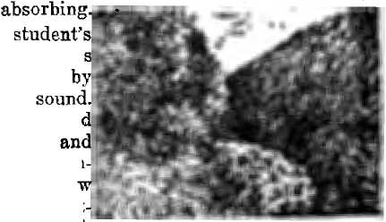
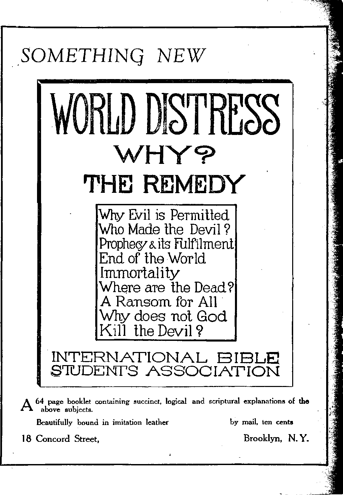

Political—Domestic and Foreign
Bits of Recent News.............
Unions, Chasing Colleges Duty of
Wages, nnd Religion the Profiteers . . and Schools . . , the Press . . . .
Mr. Mott is Alarmed.....
Notes on Crime .......
Wonders of the World.....
Americanization as an Ideal . . .
Reports from Fobeion Cokiiespondents
From Norway........
From Canada........
Money the Great Need.....
AGBICUI.TIHiE AND HUSBANDRY
Appleolooy . . .
Fhks jis Babometkrs
][«iie and Health
Sugab Refinery Questions........
Mona anent Sugar...........
Travel and Miscellany
A Junk Vacation in Keene Valley ......
Fording the Stream...........
Quaint Chapel Visited ..........
Religion and Philosophy
According to Our Lord's Cheat Pbopiikcy . . .
Religious Changes in Kurope........
Heabd in the Office (No. 8)........
(Tabloid Wisdom.............
Satan and the Alphabet.........
Order nnd Disorder...........
The Soul of Prayer...........
How is the Fabtii to be Subdued? ......
Dominion Restored to Man........
Universe Is Electronic..........
Deluded Men..............
Studies in "The Harp of God”........
643 G43 644 640 647 647 G4S 649 650 651 G51 G51
G53
655
6G3
062
G62
657
659
660
650 656 GM GG6 666 666 667
663 668 669
670 671
Published every other Wednesday at IS Coneord Street. Brooklyn, N. Y., U. S. A., by WOODWORTH, HUHGINGS & MARTIN
Copnrtnm and Proprietors Address: JS Concord Street, Prookljm, N. T., U. S, A. CLAYTON J. WOODWORTH . . . Editor ROBERT ,T. MARTIN . Business Manager C. IL STEWART .... Assistant Editor IVM. F. IIL’DGINGS . . See’y and Treas. Five Cunts a Copt—$1.00 a Year Miss IlriiiTTANUKs to THS COT,DEN AGB Foreign Offices : British ..... 34 Craven Terrace, T.aneasier Gate, London W. 2
Canadian . . . . Aurtralaslnn , . South African .
. 270 Dnndna Sfreat W., Toronto, Ontario . . 4911 Collins Street, Melbourne, Australia . . 9 Lelie Street, Cape Town, South Africa
Entered as secondclass matter at Brooklyn, N. Y,, under the Act of March 3, 1879
Brooklyn, N. Y., Wednesday, July 18, 1923
FT1HE National Women’s Trade League, con-J- sisting of twenty-seven organizations, met in Washington May 15 and 16 to consider the condition confronting wage-earning women in view of the Supreme Court’s decision invalidating the minimum wage law of the District of Columbia. As was to be expected, a series of wage cuts of women workers in the District of Columbia followed almost immediately upon the heels of the Supreme Court decision. Before the decision the minimum wage rate was $16.50 per week; now the wages of maids and waitresses in the large hotels are down to the pre-war levels of $6 to $9 per week, mercantile establishments have made a like cut, and three large stores have laid off one hundred women each, admitting that they intend to put other employes on at much lower rates.
In a dignified and serious discussion of the dangers which confront women as a result of the Supreme Court’s looking through property spectacles instead of through human spectacles these women pointed out that this one decision deprived nearly 20,000 workers of direct protection, called into question the minimum wage laws of twelve states and the wage standards of 1,500,000 women in those states, and potentially depressed the wages of all the 9,000,000 women workers in the United States.
These women expect to have another conference in November, at which there will be a discussion of what methods can be adopted to restrict the power of the U. S. Supreme Court, much of which power is believed by thoughtful persons to be usurped power. At that time they will consider the phrasing of amendments to the Constitution expressly insuring the protection of social and labor legislation and giving states and Congress the power to enact minimum wage legislation. We wish these courageous women success in their battle. It is an inspiration to read the report of their conference and to see instance after instance where these women, now leaders of their kind, have arisen from starvation wages and long hours to good pay and a forty-four-hour week because they have organized and have used their brains.
The Court was split on this decision; and for the credit of Chief Justice Taft attention should be called to the fact that he was on the right side of this question, dissenting from the majority opinion, and holding with other justices that Congress has a clear right to. limit hours of labor and to regulate or abridge the right of private contracts. These five-to-four decisions of the Supreme Court are gradually making the United States a country ruled by one man, and not always the wisest man at that.
Low wages make' cheap standards in employers and employes; they promote friction snd discontent, and there is an unusually large, tu mover of help. A poorly paid person ia bound) to change his occupation and seek a more progressive and capable employer at the first convenient opportunity. A cut in wages is the first thought of an incompetent employer, and the last one of a competent employer. The decision is a setback to human progress. One of the suggestions for limiting the power of the Court
to make such decisions hereafter is the enactment of a law or an amendment to the Constitution, if necessary, forbidding the Supreme Court to declare any act of Congress or of a state legislature unconstitutional except ujon a vote of at least six or seven members of he nine men composing the Court. !
' S
-J
--■ill
rpHE liberal wing of the Episcopal Church ia backing up the 150,000 locked-out railroad
shopmen who have been struggling since last J’j summer to secure recognition of their union and their old seniority rights. In some cities f large numbers of railroad shopmen from Gre$A ’’-s Britain, have taken the places of the locked-out men.
Wages in America have been rising in most lines; and are still rising in the building trades, but have fallen in clothing manufacture and in iron and steel. The iron and steel business continues to stand at the head of businesses which are inhumane to their men and are impervious to public opinion. Judge Gary in a recent address before the American Iron and Steel Institute, at which the question was up of changing the twelve-hour day to the eight-honr day, was anxious that the men should continue to work twelve hours per day and that they should have more religion. Probably by religion he means the old-style unbiblical and nonsensical hell-fire pabulum which in bygone years was peddled out to the steel workers whenever they wanted shorter hours or a raise of pay.
The Institute turned down President Harding’s suggestion that they come to an eight-hour day, the same as all the steel works in Britain, France, Germany and other civilized countries, because the request did not come from the workers themselves. It was only a few months ago that the steel trust thugs in Western Pennsylvania were hammering in the heads of strikers because they did make such a request. Mr. Gary’s memory is short.
Then Mr. Gary thought that prices would go up fifteen percent. They might; but suppose they did. The public have been robbed so recently on coal and sugar that they would hardly mind such a modest rise as fifteen percent on steel if thereby hundreds of thousands of workers would be benefited. And then, if some of the brains that are now devoted to squeezing the last drop of vitality out of the workers by scientific management were devoted to improving methods of manufacture and of salesmanship, maybe some of these steel concerns could get into the Henry Ford class, where the people of the country could look up to them instead of down upon them.
Then Mr. Gary thought that he could not get the 60,000 workers that would be needed in order to put in the eight-hour shift. This is a joke. Only a little over a year ago it wTas estimated that there were six million men out of work in the United States. No doubt some of them would be glad to get steady work with the Steel companies. Mr. Gary might try to find
places in his organization for some of the 150^-000 locked-out shopmen. But don’t worry; he -will not do anything like that No doubt he and his friends would like to see the shopmen thor- .1 oughly whipped. -
ON JUNE 1st in the city of Leeds, England, / there was unveiled a war memorial which represents the World War as accomplishing : another chasing of the money-changers out of the temple. Christ is represented, in priestly robes, as chasing a group of gentlemen in silk ■ hats and frock coats. But if that is the way the 1 World War worked out in Leeds it is not the way it worked out in America. Instead of chas- ‘ ing the profiteers out it chased them in. We have thousands of millionaires now where we ‘ had but hundreds before the war. And these : millionaires are getting more and more insolent day by day, demanding and receiving a larger ! and ever larger share in the questions which . * determine how America is to be run. Indeed, most people are of the opinion that the profit- , eers here are really running the country. Court < decisions bend to them this way and that, as ' if they were the lords of creation. The same courts ride roughshod over workingmen who are banded together for legitimate ends.
The designer of the Leeds University War Memorial is already in for some criticism he-cause on his memorial he has quoted a Scripture text which is very unpopular with wealthy men just at this time, namely: "Go to now, ye rich men, weep and howl for your miseries that shall come upon you. Your riches are corrupt- ? ed.”—James 5:1, 2.
Apparently in Canada they really are chasing ‘ the profiteers in earnest; for an Independent • Labor party has come out, advocating every- ‘ thing that the profiteers would not want. Among . these measures are public ownership of all public utilities, nationalization of banking and ' credit, initiative, referendum, recall, equal pay , for equal work, no court to be legally competent to declare acts of Parliament unconstitutional, pensions for mothers, old age pensions, government control of cold storage, national health and unemployment insurance, maternity : benefits, free hospital service, eight-hour work- ‘ day, abolition of the senate, elimination of im- ' port duties on necessities of life, freedom of .
speech, freedom of press, right of lawful assemblage, compulsory education, free text-books, and guarantee of material necessities of life, - medical supervision and unlimited education to minors. What this party is asking for is Christ’s kingdom, as no human government ever could _ or would do all these tilings in the interest of ■ the people. A howl would go up from too many directions. Neither politicians nor profiteers will let go of any of these things until they must.
, How the big fish eat the little ones is ex-< plained by the agreement between the Atlantic and Pacific Tea Company’s 7,GOO stores and the - National Biscuit Company, whereby the A&P ; stores get a special discount of fifteen percent
( below the prices other stores must pay for the
same goods and are able to sell two packages h of Uneeda Biscuit at nine cents and make a 1 profit, where a smaller dealer would suffer loss ;■ on the same transaction. The A&P business
with the National Biscuit Company amounts to j ten million dollars per year. But this is only
. half the story. The people of small means trade
(’ with the A&P, where they can get the best prices
and the freshest goods. Thus by shunning the smaller merchants, the poor are helping to make o the poor poorer, while the rich, who sell cheaper to the big merchants, are helping to make the rich richer, and there seems to be no way out
|. Miscellaneous
| It yT ANKIND, having wrecked himself, has
I' nearly wrecked nature. Streams of water
| which forty years ago were clear as crystal and
I smelled sweet and woodsy have been so polluted
by sewage and drainage from factories that
. they now smell the reverse of sweet and are ; covered here and there with patches of greasy i scum. The fish have gone, nobody knows where.
There used to be plenty of them; now they are ■ not to be seen.
■ A striking example of devotion of daughters i to a mother occurred at Mountain Lake Park, Maryland, May 24th. A mother of ninety-four k years was alone in the house when an explosion
of gas occurred. Three daughters were in the yard at the time. They all rushed into the house ' to rescue the mother; but not one of the four
escaped death. It was the first day of what was : to have been their summer vacation.
i Every ence in a while we hear of someone .L who has for the moment a little place of
“authority” as chaplain of a public institution, or as librarian, who may receive from the local bishop of the Roman Catholic Church a permit as to what he shall think, and who places The Golden Age on the blacklist. We do not expect to publish all the truth, nOr to reach all the people. But sometimes certain truths will percolate through the craniums of even such chaplains and librarians. Most libraries are under Jesuit influence or control. We imagine the libraries at the Iowa State Reformatory, Anamosa, Iowa, and the Albright Library at Scran* ton, Pa., to be thus controlled. But we are comforted by the fact that some of the greatest libraries and press associations in the world are on our subscription list. The Government has published statistics showing that the mentality of many millions of American people is on a par with that of a boy twelve years old. We would rather have a few on our list that “have their senses exercised to know both good and evil” than many times that number of others who will not use their own brains, and who do what they can to hinder others from using theirs. Things have got to a pretty pass' in thia country when we must have sitting on imaginary pedestals a few persons who are prepared to tell other people what they may read, or what they may think about. ,
Gene Stratton-Porter, writing in the New York American, recommends as books for boys and girls over ten years of age the Bible, the works of Dickens, Thackeray, Cooper, Irving and Hawthorne, Robinson Crusoe, The Swiss Family Robinson, Paul and Virginia, Undine, The Vicar of Wakefield, Pilgrim’s Progress, John Halifax Gentleman, Jane Eyre, The Mill on the Floss, Romola, Adam Bede and Uncle Tom’s Cabin. It seems like a good list, especially if we add to it The Hasp op God by Judge Rutherford and the Studies in the Soeiptuees by Pastor Russell. ,
A new food has been invented in Vienna, $he joint product of an Englishman, Robert Gjra-ham, and a Hungarian, Dr. Lazio Berczeller. The base of the food is the soy bean, from which a flour has been produced forty percent cheaper than wheat flour, and a milk which costs only one-sixth as much as cow's milk. The food is said to be .delicious, and with green vegetables constitutes a complete food. The soy bean is largely grown in Asia and will grow anywhere.
It is freely predicted that this discovery will virtually put an end to human starvation.
THE University of Chicago has decided that hereafter its president may or may not be a Baptist. It is supposed to be a Baptist institution, built and maintained by Baptist funds, although it is well known that of the $36,000,000 of Baptist money put into its treasury $34,000,000 came from John D. Rockefeller. The reason alleged for changing the rules so that hereafter the head of this Baptist school may be a non-Baptist is that heretofore the Trustees have sometimes found difficulty in getting a Baptist able to fill the position. This seems to us like a pretty thin excuse.
A carefully-planned experiment in a class of fifty students at Northeastern University, Cambridge, Massachusetts, has proven that the reports of eye-witnesses of an occurrence which takes place in plain view of the whole class are not to be believed. Three students were trained by the teacher to pretend a tragedy, which was made to the class to seem to be a reality. One pointed a banana at another and shouted in an angry tone, “Take that!’’ At the same instant the third, stationed some distance away in the back of the room, fired a blank cartridge. Forty-nine of the students testified that the man who had the banana in his hand had fired the shot. The supposedly injured man was dragged out by two men who sat beside him. Not a person in the class could give their names, although they were well known by all. Forty-seven who saw the banana said that they saw a revolver instead. Only twenty of the fifty identified the man who fell when the shot was fired. Several saw the flash of the explosion from the mouth of the banana when it was fired, and others saw the smoke. Two students said that a yellow weapon was fired. The descriptions of clothing of the participants were ridiculous, as well as the descriptions of their personal appearance. The banana carrier wore a bow tie, but every student testified he had on a four-in-hand tie. These students were all students of electrical, civil and mechanical engineering, and were as high a type of witnesses as could be found for any occurrence.
Reverend John J. Queally, rector of the Episcopal Church of the Transfiguration, Washing
ton, D. C., has a poor opinion of many of out colleges. In an Easter sermon he said: “Under the pretense of new philosophies and progres- * siveness our colleges and universities are send- “ ing out young men and women—pagan intellee- ■. tuals—who, smarting under restraint of any kind, cannot rest until they have given to the world their immature ideas on how to set the world in order.” ,
The women students of Vassar College, Poughkeepsie, have raised and sent to Germany 4 a fund of over $1,000 (over 20,000,000 marks) to help the German women students. This seems N to us like a very noble-minded act, far different ’ from the narrow, partisan spirit which has J caused some communities to fly into a rage when they discovered that goods made in Germany 1 were being sold again in America. What do y such people expect the Germans to do ? Perhaps i they expect them to stop living altogether. .
The United States is getting along with its 4 educational work in the Philippines. lEhas bl established and maintains in the islands 7,641, public schools, employing 24,975 teachers. There | are over a million young Filipinos in these . b schools. Only a few years ago the education of 4 the Filipinos was all in the hands of the papal ;•
hierarchy, and it would have been hard to find »
on earth a more backward people. *’
The National Society of the Sons of the 1 American Revolution has been examining some J of the modern textbooks, and finds itself out of b accord with the English-Speaking Union and i other organizations which have in view the reabsorption of the United States by the British | Empire. It passed resolutions condemning ' David Saville Muzzey’s “History of the United | States,” now used in New York City schools, as ® hopelessly wrong and unfit for school use be- j cause it devoted but seven pages in a 538-page | book to the Revolutionary War and only twelve M pages of allusion to it in all. We feel certain. | that the attempt to get America back into the . : j British Empire will never succeed. |
Thomas A. Edison would have the children in the public schools instructed by movies. 4® There is hardly a thing that cannot be taught by means of them. Educators have been slow '■JI to take up with the idea because it has been fought by the text-book companies. Naturally they prefer to keep a student’s eyes within a JI book, if they can get the profit on the book. 4a
yvLTlg, 1821
v* QOLDEN AQE
Pastor Russell's Photo-Drama of Creation was Shown to twelve million people free, and was greatly enjoyed by millions; but it was impossible to keep the Drama up on account of the expense.
rpHE Press poses before the people as a reliable teacher; and, as a matter of fact, it is about the only teacher the people as a whole ever have. It is to be regretted that the Press makes no greater effort to tell the truth, the whole truth, and nothing but the truth. Just now the British Press is up for criticism; and justly so. Not only do Americans who have been abroad feel indignant at the beggarly way the newspapers of Britain play up the minutest acts of dukes and lords whose existence benefits humanity not one iota, while they ignore America, the greatest English-speaking country under the sun; but the Britons are noticing the matter themselves. Mr. H. G. Wells, the English writer, in an article in “The American Magazine,” takes note of the fact that American papers are forging ahead and becoming journals of world events, while the British papers are rapidly slipping backward, so that, in his judgment, there are now left in London but two daily newspapers worthy of the name.
The New York Globe, which will be 130 years old on December 9th of this year, and which is the oldest daily newspaper in the United States with an unbroken record of publication, has been sold to Frank A. Munsey, the publisher of the New York Herald, the Sun and the Evening Telegram. Mr. Munsey is the owner of many newspapers in various parts of the country. The 108 shares of stock in the paper, which had had a par value of $100 per share, were worth $6,944 per share at the time Mr. Munsey bought them; but it is claimed that since the paper was started, and down to 1918, its backers have had to contribute $3,754,372 to keep it going. They saw that the time would come when it would be a valuable property.
DR. John R. Mott, international leader of the Young Men’s Christian Association, in an address at Fargo, North Dakota, in March, expressed a great desire to see the principles taught by Christ instilled into men between tha ages of eighteen and thirty. He said:
“I have never been so alarmed over the world situation as I am today. The friction points between people) and nations were never more numerous or more aggravated. More men, women and children have died during the last twelve months as a result of conditions directly traceable to the World War in a district stretching from Russia and Finland on the north through the Ukraine^ Poland, Czechoslovakia and the Balkans, than died in, armies on both sides during any twelve months of battle^ even when the sacrifice was greatest.”
At the conclusion of Dr. Mott’s address there was a discussion of the evils confronting the young men of Fargo. One of the evils mentioned was cigarettes. It will be remembered that the Young Men’s Christian Association was one of the organizations which enthusiastically supported the World War; also that it was engaged on a large scale in the selling ofl cigarettes to the soldiers at the front.
We have a suggestion for Dr. Mott and for the Young Men’s Christian Association. Let the Young Men’s Christian Association, if it really wishes to benefit the young men between eighteen and thirty, retire definitely and’ completely and finally from the war business and the cigarette business; and then when Dr. Mott and others tell of their anxiety that the young meu should follow Christ there will be sama who will believe that they are not doing it for business reasons. Christ’s teachings are plain enough: “Resist not evil”; “They that take the sword shall perish with the sword”; “Our weapons are not carnal weapons”; etc. Perhaps Dr. Mott should go into some other business.
The Australian Worker has something interesting to say on this point:
“There has been a most alarming increase of crime in every country that took part in the war. Human nature seems to have grown more cruel, more violent, more brutal in the infliction of pain and death. And that yvaa just what might have been expected. Yet, while the war was on, almost all our clergymen spoke of it'with enthusiasm, with a fervid passion, as something that was going to purify our hearts, lift up our souls, make us ' spiritually beautiful 1 How can we ever trust them after that? Every jingo preacher of the gospel ought to hide his head in shame. Every parson or priest who stood up in his pulpit, and glorified the war as a mighty moral force, should be doing public penance today. But they’w not. Their bells are ringing to call the. people to their churches, just as if nothing had happened. They have the presumption to talk to us in the accents of godly authority, and Archbishop Wright is horrified because the Sydney Agricultural Show is to he open on Good Friday, the day on which Christ died!
“Is 'there anything on earth so sickening as ecclesiastical inconsistency? The war-mad churches have altered the date of the crucifixion to August 4, 1914. And not all their faith-healing stunts can avail to make us forget that they helped to inflict upon humanity the most grievous injury it ever received, and infect it with a disease beyond the curative powers of hysteria manipulators. They extolled as a God-sent means of grace and regeneration a conflict that filled vast cemeteries with murdered dead, carried grief and suffering into millions of homes, and is crowding the jails with criminals. No, we can never forget; nor, while memory lasts, can we ever forgive/’
As a matter of history we list the participators in the World War. On the one side were Austria, Bulgaria, Germany and Turkey. On the other side were Australia, Belgium, Brazil, Canada, China, Costa Rica, Cuba, France, Great Britain, Greece, Guatemala, Haiti, India, Italy, Japan, Liberia, Montenegro, Newfoundland, New Zealand, Nicaragua, Panama, Portugal, Roumania, Russia, San Marino, Serbia, Siam, South African Republic, and United States.
The Bible is now published in 770 languages and dialects, and the annual distribution in all languages is thirty million copies. Twenty-five of the dialects of China have the Bible in their own vernacular, as have also sixteen of the dialects of Japan. The Eskimos have never seen sheep, hence do not know what they are. Accordingly, the Eskimo translation of John 1: 29 when rendered back into English reads; “Behold the Baby Seal of God, which taketh away the sins of the world," this being the best the translators could do.
THE professor of criminal law in the University of Michigan is of the opinion that the newspapers would render a great service to humanity if they published much more news of the penalties paid for crimes than they now do. As it is, much space is given to the crime itself, while but little is given to the punishment. The Toledo post-office was robbed; the papers made much of it. Most of the loot was recovered; and twenty-one men and women were sent to prison for the job, two of them for life and three others practically for life. This aspect of the affair received but scanty notice.
The interesting fact has been brought to light that women do not show mercy to women. . Women juries convict women murderesses with- ; out hesitation, while men juries acquit them. When the juries are mixed, the women are for conviction, while the men are for acquittal. -Women are inclined to be kind toward men, but ; cruel and vindictive toward women. -
New York has had a bull fight. Spain sent ' over one of its star bull butchers. He chased the bull around a roped enclosure for a few t. minutes when the terrified bull broke through, ? galloped across a slippery floor and wound up, i trembling and terrified, and with a great crowd j at its heels, in one of the adjoining cafes. If these Spanish picadors really want something exciting they should try crossing upper Broad- ■ | way on foot without getting run over by an 1 automobile. j
Statistics compiled by the National Commit- | tee for Mental Hygiene show that in the forty J years from 1880 to 1920 the population of the dl U nited States gained 110.8 percent; while the ‘4 increase in the number of insane, in the asy- 1 lums, was 468.3 percent. More of the insane are 3 in the asylums than was formerly the case and ...3 this affects the figures somewhat. Dr. A. IL :3 Desloges, Director of Asylums, Province of 3 Quebec, mentions some of the many symptoms 3 which show that the world is going insane: Wild enthusiasm in play or work, out of all pro- | portion to the importance of the matter in hand; 3 the desire for publicity; disregard of the deca- |
logue, and the substitution for it of the question |
whether or not it is safe to do the thing desired; | war insanity; communistic insanity; patriotic | insanity; worship of riches; spiritism.
Among the principal causes for this state of | affairs Dr. Desloges places the World War with | its incident tremendous nervous strain; the con- . sequent high cost of living; the inevitable loss ’ of confidence in so-called spiritual leaders and the resultant loss of all faith, due to the ineor-- rect supposition that these religious leaders are * really Christians and believers in the Bible. 'Ab • a matter of fact myriads of them were in the hell business for revenue only, in the evolution business for the same reason, in the trinity business for the same reason, in the war business ? for the same reason, in the cigarette business for the same reason, and in the smug, sanctified, ’ soft-spoken, afternoon-tea, money-begging business for the same reason.
Is
The so-called Marathon dances which have been going on in various places are illustrations of the coming insanity of the race of which Dr. Desloges writes. At North Towanda, Pennsylvania, a young man danced with his partner for eighty-seven hours continuously, and then dropped dead. At Cuthbert, Georgia, a young woman danced 104 hours and forty minutes, and perhaps would be dancing yet had not an angry brother carried her forcibly off the floor.
There is a connection between Marathon dances and spiritism. The medicine man dances in order to get into communication with the demons; the whirling Dervish dances for the same reason. The probable explanation is that the brain becomes overheated, and hence not under normal control of the person; thus it is more easy of access to a demon. Spasms and frothings at the mouth sometimes accompany such dances. After the war there was in Germany a dancing mania which spread to the remotest villages in the country.
In Constantinople the beggars have so increased since the World War that steps have had to be taken to suppress what has become a menace. Pedestrians can hardly make their way through the streets, on account of the demand for alms coming from every direction. At one roundup of beggars recently the police gathered in 2,000 children, of both sexes. Forty of these children were found in one nest. They are homeless, starving sufferers.
A horse-dealer in Moscow, by the name of Komaroff, has just been apprehended after making away with thirty-three men within the past two years, with robbery as the motive for the crimes. About every other week he lured a victim to his stables under pretense of selling him a horse, and killed him for what money he happened to have on his person at the time, the average amount obtained was about eighty cents. The odd thing about it is that the man bore an excellent reputation and was said to have a genial, kindly manner.
OF THE seven wonders of the ancient world, the Great Pyramid, the walls of Babylon, the temple of Diana at Ephesus, the statue of Zeus at Olympus, the Mausoleum at Halicarnassus, the Colossus at Bhodes, and the lighthouse of Alexandria, three are mentioned in the Bible, the first three; and the first of these in still in existence.
The Great Pyramid is 486 feet high and oneeighth of a mile long on each of its four sides, making it the largest building in the world. There are stones in it thirty feet in length, weighing 880 tons each, which fit so closely together that one may run a penknife over the surface without discovering the breaks between them. The Great Pyramid is located in the center of the land surface of the whole world. Its sides are exactly north and south, east and west. Its measurements disclose the exact number of days, hours, minutes and seconds in the year; the earth’s distance from the sun; the length of the precessional cycle, and the length of all the important periods of human history as recorded in the Bible and in secular history. Bible students believe that without question God was its architect and that it is the witness to the Lord in the land of Egypt, referred to in Isaiah 19:19,20.
The walls of Babylon were from thirty-two to eighty-five feet thick, and from seventy-five to three hundred feet high. On the summit were two hundred and fifty towers, placed along the outer and inner edges of the wall, towet facing tower. In the walls were a hundred brazen gates. The walls were torn down by Xerxes iii 484 B. C., about fifty-four years after the fall of Babylon at the hand of Cyrus.
The temple of Diana at Ephesus, which figured largely in the experiences of St. Paul, was completed in the days of Alexander the Great, but without his help. It became a vast museum and storehouse of riches, and at one time was the most important outstanding financial and commercial institution in the East. It was also a refuge for fugitives and criminals, who could not be touched while in the temple. When the temple was burned by the Goths in 262 A. D., some of the stone pillars escaped destruction and were used in the construction of the mosque of St. Sophia, Constantinople, where they remain to this day.
The eighth wonder of the world is the Great Wall of China, of which we will have more to say in an early issue. The ninth wonder is the concrete viaduct over the Tunkhannock Creek, at Nicholson, Pa., on the line of the D. L. & W.
AT THE time of the Revolutionary War a common grievance served to unite the various American colonies. This bond of union continued to grow and to instill into the hearts of the founders of our republic an intense spirit of patriotism—love of country. It is upon the unselfish ideas and ideals which these forefathers of the United States embodied in our Constitution that the doctrine of Americanism is based. This doctrine serves also to teach love, honor, and respect for our national emblem. Its further purpose is to stimulate in each citizen thoughtful interest in national affairs and to make every citizen a voting citizen where one has the right of suffrage.
Many of the active promoters of Americanism are sincere, earnest men and women. Their idea is that the present and future welfare and safety of our nation depend upon instilling the doctrine of Americanism into each inhabitant.
Dr. B. K. Baghdigian, an Armenian by birth, ranks among the most noted lecturers and writers on this subject. Recently it was my • privilege to hear him describe his former life— relating how he escaped from Turkish massacres to America while a boy; of his privations and hardships while struggling for an education in this land; of his fall into infidelity and Socialism, and of his later catching the spirit of Americanism and his present intense love for his adopted country.
In the mind of this man and many others, 'Americanism is a grand ideal which they worship with an intense spirit of devotion. It would be well if these ideals could be realized. It would be well indeed if each individual possessed such a noble spirit of self-sacrifice as to he willing to forego certain individual privileges for the common good. But students of past history who are also familiar with Biblical prophecy relative to the future see clearly that the goal of Americanism cannot be realized.
Neither can the cosmopolitan ideal of a worldwide union of nations to abolish war and perpetuate peace reach fruition. All past history has demonstrated that mankind in general are intensely selfish. The desire and concern for personal prosperity and welfare has always ruled in the hearts of the vast majority.
Almost every war of the past has given opportunity for the unpatriotic minority to gain places of greater prominence and more wealth, that they might lord it over their more stupid brethren. The great World War furnished opportunities of this kind, and the records show that there was profiteering on an unpreeedented scale.
At this after-the-war stage of history the favored few are still scheming schemes and dreaming dreams as to how the majority may be kept in subjection. The doctrine of Americanism serves well their purpose. Why? Because Constitutional government by the people, in the full sense of the term, no longer exists.
In the Washingtonian days of long ago when almost everyone told the truth, and when one could know personally all the prominent men of the Republic, it was possible for one to vote intelligently. Those men could be elected who would serve the people rather than betray their trust for the sake of becoming their masters.
Today public thought is largely machine-operated by the public press. This octopus has no conscientious scruples and misrepresents, distorts and colors facts to accomplish whatever its heads may direct. “Americanism” serves excellently in this line to keep the-people in subjection and contented.
Hence Americanism is not the superlative ideal. For the foregoing and many other reasons it is destined to pass away as a cherished treasure from the hearts of men. We should not regret this; for something grander and nobler is to take its place. Soon the great autocracy of Christ Jesus is to have world-wide dominion. The right to live in this dominion will be permanently granted only to those who become, not Americans, not so-called Christians, but real Christians in spirit, in deed and in truth.
A great many of the champions of the Americanism ideal I feel sure possess such nobility of character that will enable them to catch quickly the spirit of Christ’s kingdom. Scriptural prophecy assures that this reign of. righteousness will be the desire of all nations, and this is why I conclude that the Americanism ideal will cease to be, rather than perish as a fond regret. It will be submerged in the higher ideal that is to come.
uq
From Norway
THE population of Norway is two and one-half millions; it still has a king. Its constitution corresponds with that of England, probably a little more free, however. The political leaders do their best; the condition is much better than in many other European countries; but here is also much hypocrisy, deception, and fraud in political, financial, and religious life. On account of big business and its different interests, the people are often used by the profiteers for personal gain. The people are one of the most thrifty and enlightened of the world’s nations, and often put themselves in opposition to various enterprises. The political parties are divided into three main groups: the Kight — conservative; the Left — liberal; the Communist—bolshevik. There are also two minor parties: the Right—Socialist, and the Fanners’ party. The conservative (Right) is at present the strongest party; but as none has the upper hand in “The Storthing” there are often government crises—once "the Right” and once “the Left” has ruled. The Communist (bolshevik) are in the lead at the ballot just now.
In 1920-21 Norway had a railroad strike, a seamen’s strike, and a general strike. These strikes revealed not only the enormous strength of the working classes in the country ; but also the strength of capital. None of the parties, however, dared put the case to the deciding point. Conditions since have been more peaceful, but discontent is still smouldering among the masses, and the fight will be much harder the next time it breaks loose. Norway as a little country is depending mainly on its import and export trade with its neighbors. Unemployment is about 25,000 to 30,000. Norway has had lately several financial difficulties, but not nearly so heavy as some of the neighboring countries. The money value stands today fifty percent under the dollar, but was in 1920 down to 125 percent under the dollar.
Lawlessness is increasing; and the belief in the authorities and respect for them are fading. The prohibition law is openly violated, much on account of the big newspapers’ demoralizing agitation against that law. The authorities see the violation, but lack the power and also the will to enforce the law. Just recently the government has abolished the prohibition law of “the hot wine” on account of pressure from the wine-producing countries against Norway, and also because prohibition is a hindrance to the work of the profiteers. This abolishment of the prohibition law is made notwithstanding the fact that it was passed by a popular vote with a large majority three years ago.
The State religion is Lutheran (Protestant), but all other Christian sects are well represented. The “bundles” are about to be tied together (by alliances, etc.); but as a whole the people have not yet turned their backs to the nominal systems, although the attendance haa been small lately—notwithstanding the people’s religious inclinations. The masses are awakening and are beginning to judge for themselves what constitutes true Christianity, and thus are freeing themselves of the leaders who would dominate and hold them in servility to the creeds of the dark ages. The literature of the International Bible Students is turning the tide.
ONE of the first things that strikes the reader of our daily papers during the past few weeks is the activity of our various church organizations. ,
For instance, these two items are somewhat significant: The Vancouver Province states that a movement is on foot to reconvert to paganism the tribesmen of the Six Nations Indians, whose reserve is near Brantford, Ont. Considerable success has attended the efforts of the “foes of Christianity”; for we find the tribe, generally speaking, is more addicted to baseball and other activities of like kind on Sunday than to the church attendance wThich the church authorities would so dearly love to see. The churches do not participate in baseball gate receipts. Pagan ceremonies such as the Feast of the White Dog, which calls for animal sacrifice, are carried out under the tutelage of Des-kehah, the chief of the tribe. This does not say much for the success of the missionary efforts of our various churches, right here in the heart of “Christendom,” amongst a people that are ninety-seven and five-tenths percent Christian, according to the recent church census. Then, again, the Woodstock Sentinel-Review states that a formal demand on the part of the Council of the Six Nations tribe for the return to them of a trust fund amounting to $70(5,000 which was placed in the hands of the British Government for administration for the benefit of the tribe generally, is meeting with opposition on the part of the Department of Indian Affairs, because the Indians refuse any longer to recognize the authority of the Canadian Government, and desire to throw away the blessings of civilization and return to the condition of their ancestors. The Truro (Nova Scotia) News comments on the missionary effort of the Methodist church and states that owing to a lack of funds amounting to between $300,000 and $400,000 there must be a curtailment of activity in the mission fields in China and Japan.
Ml
We might expect a little confusion amongst the ranks, of the ecclesiastics after reading the following from the Toronto Daily Star: “Ue-fused to Accept Old-time Doctrine, Licensing of Three Presbyterian Ministers Held up over an Hour/' says the headline; and we note that the reason was, “Inability to accept certain long-established points of doctrine.” The first objection "was to “accepting the Old and New Testaments as the Word of God.” They also objected to accepting the Westminster Standard as the basis of belief and teaching. We can understand the latter reason easily enough, hut have difficulty in appreciating the former one. What object has a man in becoming the minister of God, if His Word is rejected to start with? Possibly the salary to be obtained for preaching has a little to do wi th it.
We find in the London Free Press headlines a comment on the modern church as follows: “Labor Class Alienated from Churches through Creeds and Disunion.” They continue that, by actual count, ninety percent of the artisan class stay away from church, and illustrate the situation with a story of a darkey who attempted to become a member of a fashionable church the congregation of which were all white. The minister was much put out and, not knowing what to do, recommended to the darkey that he pray for guidance. Rastus prayed and prayed and prayed. Eventually he called on the minister and sadly announced: “It’s no use, massa; I asked the Lord for guidance; ari He said to me, ‘Stop worrying about that church, Rastus, I have been tryiri to get into that same church myself for thirty years!'” “It is my impres
sion,” goes on the Free Press, "that the general , opinion of the working class about the churches is much the same; they bar, out genuine Christianity and place creeds in its stead.” -J
The Toronto Daily Star takes up the cry -wi th the presentation of the views of Dr. Lorne _■ A. Pierce, literary adviser to the Methodist Book Steward, the Rev. Dr. S. W. Fallis. “Men j are weary of religion accompanied by jazz gospel songs and troubadour preachments,” is the emphatic and critical comment concerning a modern trend in Christian pulpiteering in Canada, by Dr. Pierce. He severely scores the tendency to make the church a secular as well as sacred institution, turning it into a “rag-picker’s paradise”; and he hits hard at punning and flippancy and even irreverence in the pulpit. He closes with words that find an echo in our hearts:
“The saddest thing in all the world ... is that man . . . who stands in the sacred places . . . bearing the symbol of a power he does not possess. The man whose mind and heart the truth of God has touched will have a Gospel full of immediateness, which he will proclaim with power, with dignity and with reverence befitting an ambassador from so high a court.”
From Moose Jaw, Sask., comes the plaint of the Evening Times commenting on the recent
utterances of Bishop Gailor, of the American Episcopal Church, who has been talking plainly about “pulpit sensationalism.” “The main desire among some of the clergy seems to be to J shock somebody,” says the Bishop. Comment- rig ing on the Bishop’s utterances, the Times says % that he is correct in supposing that the ordi- i nary ministrations of the church seldom get into the public prints, but only the sensational J items. “It is easy to imagine the headlines of the future,” it goes on (after the public are sur- 4 f cited with sensationalism): ‘Noted Divine Dedares Sinners Must Repent.’ ‘Bishop Asserts | that Only Pure in Heart Shall See God.’ ” It I all depends on what the public considers startling. After people have been fed long enough on sensational utterances they may come to | think of commonplace Christian teaching as a | tremendous sensation. /
Money the Great Need
BUT the following puts the finishing touch on the whole matter. The Manitoba Free Press gives to the world the following press despatch from London, Ont.:
853
"It was announced today that the Financial Board of the Anglican diocese of Huron may proceed against some 2,800 of its communicants who owe the diocese about $45,000. This debt represents arrears of payment to the Anglican Forward Movement of a few years past. It is proposed that these arrears be collected by regular collection agencies or through the courts.”
If memory serves us aright, this Forward Movement was the Canadian section of the "Interchurch World Movement.” The affairs of this gigantic fiasco were wound up some months ago and registered as a failure. Although we do not favor the idea of any man’s repudiating his promises, we think that this matter might be made retroactive. What happened to all the cash that was collected?
While we are on this subject of cash, here is an interesting little item culled from the columns of the Saskatoon Phoenix:
"Friday, March 30th, 1923, was Good Friday, a day when ‘good’ Christians are supposed to devote a considerable portion of their time to contemplation of the great sacrifice made by the Savior on this day for the benefit of the human race. Let us suppose, then, with all reverence that the Savior had come to Saskatoon and had wended His way to the Third Avenue Methodist church. What would He have found in the church? He would speedily have discovered that unless He was able and ready to pay twenty-five cents He would not be able to enter the church at all. Having paid the required Bfim, He would have been able to listen to some excellent orchestral music while a movie machine clicked merrily in the balcony and projected its story upon the back wall of the church, all for twenty-five cents. Wonderful I Has the church of God come to this at last ? Had those responsible for this horrible piece of moneygrabbing no qualms of conscience when there flashed on the screen the picture of our Savior chastising those who were desecrating His Father’s house? ‘My house shall be a house of prayer, but ye have made it into a movie-house.’ By the way, we see that Harry Lauder is making another world tour. We wonder if the Third Avenue Methodist church will book this attraction again.”
No comment is necessary, other than to add a note to the question of the newspaper, that Money, with a capital“M,” seems to be the only worry of the church today.
To close this section of our report we append part of the contents of a letter recently received from the "Orillia Presbyterian Church,” Orillia, Ont.: Heading—“Consolidated Debt Fund,” dated April 2, addressed to Dear Sir or Madam:
“The entire church debt is now down to practically $36,000—organ $14,000 and property $22,000. There are 1,100 members in our congregation, besides a large number of adherents. The Finance Board has been bo impressed with the fact that a small contribution weekly from 1,100 persons would very soon wipe out ths entire church debt, that it has decided to put the matter befdre the congregation. Let us suppose that each brick in the building unpaid for is worth 25 cents, and we aim to pay for 1,100 each week, in addition to contribution through duplex envelopes, how many of these 25-cent bricks will you pay for each Sunday?”
Our query is, When can we expect delivery of the bricks so purchased? Or is it just one of those childish "Let’s pretend” ideas whereby the necessary money is scientifically “eased” out of one’s pocket with the least amount of pain? Come on, folks, line up for your bricks 1 Is not the line about the “in addition to duplex envelopes” just too intriguing for anything? The Government Finance Board is also “impressed” with the idea that a small contribution from a number of people will wipe out debts, but they do not offer to sell bricks out of the Legislature buildings to get the cash. This valuable idea should be internationally patented. Think what Germany could do with it, or Austria, or Russia, just now I
Conditions in the fanning sections show little or no improvement. Reports from the West only serve to enhance the reports made through the columns of The Goldeh Age recently. The condition of the West, financially, is deplorable. Moose Jaw Evening Times headlines an Ottawa despatch: “Rural Saskatchewan Sunk in Well of Indebtedness,” the report of George F. Edwards, vice-president of the Saskatchewan Grain Growers’ Association. Mr. Edwards gives some illuminating figures. One village of 250 farmers had a wheat export last season of 325,000 bushels and an indebtedness of $690,000! (Wheat averaged less than one dollar a bushel.) In one municipality, out of 1,440 quarter sections 274 were put up for tax-sale in 1919, 427 in 1921, in 1922 the list rose to 618! Conditions were described as “exceedingly distressing.” We agree. Mr. Deachman, of Calgary, before the special agricultural committee of the House of Commons, agrees also. He says that in parts of Alberta cows sell for $20, horses are of no value, and cattle are being fed seed grain.
The Farm and Ranch Review waxes sarcastic about the coal situation:
“Fellow fanners and fellow philanthropists,” it says,
"I am overflowing wit! admiration for our class! Do we exhibit the mean little traits of other groups of society? We do not If any other class is robbing us, what of it? No one raises his voice in vulgar protest. Let the culprit live with his uneasy conscience. That shall be his punishment. Our time is claimed by matters of greater importance, such as politics, divorce laws, single tax, remodeling the Banff Bath House, door locks in hotels, recognition of chiropractors and many other weighty and momentous subjects closely related to agriculture. Such a commonplace matter as the price of coal to the prairie settler, for instance, cannot be permitted to intrude on our deliberations. If any settler cannot afford to pay three prices for coal, let him burn his kitchen table, or freeze. Nothing could be simpler. So the farmers throughout the West will be delighted to hear that the annual wage dispute between the coal miners and the operators has recently been satisfactorily adjusted on the usual basis, which is, that the miners get all they ask, and that the operators accommodatingly transfer the load to the consumer.”
Here is our perennial bugbear, the coal situation. Canada with the largest potential coal deposits in the world, with perhaps the sole exception of Siberia, pays more in proportion for her own product than any other country-in the world. Northern Ontario last winter had the pleasure of paying up to $24 per ton for American hard coal, with a country full of native coal untouchable. It is a delightful feeling to sit before the leaping flames and watch $24 coal crumble to ashes—-if you don’t happen to be the one that pays for it!
And if it is not coal, it is something else— wool for instance. The Moose Jaw Times tells us that in 1922 the farmer must sell the wool off fifty sheep to buy a suit of clothes! And we know that he might sell the hides off as many beeves and not have the price of a pair of shoes1 And the war has been ended five years; and this is the great era of prosperity that was promised by the war politicians.
Perhaps the answer lies in the statement of Dr. Desloges, Quebec Director of Asylums. The Regina Leader editorially comments on Dr. Desloges’ statement that in another quarter of a century the whole civilized world will be insane. The doctor goes on to say that in the past year a record has been made in the number of cases of insanity treated in Quebec asylums. He blames our artificial life, excitement, and abnormality of effort in work and play, and suggests that a cure lies in getting back to quiet family life.
Let us be thankful that we have at hand an entire thousand years under the rule of Christ in which to recover normalcy and poise. And now for a little real old-time, unadorned, bareknuckle, Tammany-type graft without any redeeming features.
As is generally known, Canada has just had a shake-up over the nationalization, or more correctly speaking, the pubhc ownership of certain lines of railroad, that were built at public expense and operated for private profit. The old Board of Directors gave place to new, and unluckily for someone there was some loose cash lying around. The Toronto Globe report is interesting reading. One naive confession reads: “The English Board of Directors on February 19th, 1920, voted themselves, as compensation for loss of office, a gratuity of five years’ directors’ fees.” Somebody in the House of Commons got prying around and lifted the lid on as pretty a mess as has come to light in years of railroad grafting. After the smoke cleared, it appears that when the old Board reluctantly moved off the job, it carted along with it in the form of plasters for hurt feelings, and pills for that tired feeling, the tidy sum of $462,280 or more. Not too bad. We suspect that perhaps the amount was limited by the available cash. Had there been more in the Treasury, no doubt so valuable a man as the President of the Canadian National Railway would have spurned so paltry a sum as $35,000 as an honorarium for his invaluable services. And the other parti ci-pants proportionately. Foolish people say that public ownership will not pay; but we rise to remark that by the looks of this record it surely pays some people!
The next report that comes to out' hand is the “Manifesto of the Workers’ Party,” which is frankly and outspokenly Communistic. One of its subheadings is, “Imperialism and Economic Chaos”:
“The first World War drew thousands of Canadian toilers into its maw. Some were forced to go, as an alternative to the starvation of unemployment. Some went under the influence of propaganda. All were told that they were fighting a war against imperialism and autocracy, the victorious outcome of which would be ■ followed by the end of all war, the destruction of imperialism, the beginning of reconstruction, and higher living standards. Years of disillusionment have followed. Only a few months ago, through its agent, Lloyd ' George, British Imperialism had the audacity to try to
embroil the workers of Canada in its imperialistic war game of grabbing the Mosul oil wells. The invasion of the Ruhr is the outward renewal of the war for 'democracy/ now seen clearly to be a war for coke, iron ore, and steel. The lies of reconstruction have been exploded no less that the lies about ending imperialism and war. The European continent is in economic chaos. The speculative boom that America is supposed to be enjoying today is not based upon any fundamental reconstruction of world economics. As soon as stocks are replenished and the warehouses are filled again, out the workers will be thrown on the unemployment market/’
Can one altogether blame workers for forming revolutionary parties in the face of a situation of which the railroad steal mentioned above is only one small highlight? With increasing thankfulness we feok eagerly toward the foregleams of the incoming Kingdom of Righteousness and Peace, the Golden Age of promise.
A SMALL boy was once asked to write an essay on "Apples.” And so with characteristic brevity, he began:
“Apples are born on trees and, unlike grapefruit and oranges, have to be eaten from the outside in. But if green, they sometimes make the inside outside. There are different kinds of apples. There’s the Adam’s Apple, the Apple of Discord, Sodom’s Apples, the Apple of My Eye, Applejack, and Appleton’s Cyclopedia.”
But we turn to a more reliable authority for information on this king of the vegetable kingdom.
In the first place the composites of apples generally are albumen, sugar, gum, malic acid, gallic acid, fibre, water, and phosphorus. This combination is commended to offset and neutralize the chalky matter of other foods, and is used in nature to drive out foreign poisons.
Further, history tells us that climate has much to do in producing the great variety known to the horticultural world. Monuments have been erected all over the country to the originators of the various species. These monuments are to he found in the names of the fruits themselves. The "Standard Dictionary” lists 288 varieties of apples and at considerable effort and espouse has collected data as to which are most popular. The varieties marked "Best” are listed in order as follows: Banana, Belmont, Bethlehemitc, Bullock, Cogswell, Cox Orange, Delicious, Early Joe, Esopus, Fall Wine, Garden Royal, Grimes, Jonathan, King David, Lady, Melon, Mother, Pomme Grise, Porter, Primate, Red Canada, Summer Pear-main, Swaar, White Pearmain, Yellow Newtown. Besides these, 136 are reported as "Very Good,” and all the rest are marked "Good” except the Doyle and the Rock Pippin, which seem to have no friends. The apples which
By Joseph Gretg
grow best and are very successful, no matter : where they are planted, are the Early Harvest and Wealthy, which are “Very Good”; and the Maiden Blush, Oldenburg, and Red Astraehan, which are marked “Good.” -
Surely a beneficent Creator filled this single fruit with an- infinite diversity of richness, beauty, and flavors. But what will men say when the Invisible Blesser, who is now person- ■ ally present, begins to touch the entire course / of nature, and commands The earth to yield i her increase/ ‘the desert to blossom as a rose,’ ; and the rejoicings of “the myrtle and the fir *
and box trees,” to burst forth with a perfect ;
earthly fulness? =
A girl in Ohio procured some gummed letters •, of the English alphabet which she proceeded to | fix on the surfaces of unripe apples then plen- ; teous in her father’s orchard. On one she put t “1914—End of World”; on another, "No Fiery j Hell”; still another, “Golden Age Here”; while on others Scripture texts were affixed. In due " i time the sun tinted the apple crop, also coloring / these particular apples excepting under these j
letters. Removing the stickers revealed the
printing clearly in basic green. When the
neighbors saw the queer production, it aroused
great excitement. And the report went far and
wide that the Millennium was here, and that
G—~'s apples were coming out now with Scripture texts all over them.
Afterwards a few of these specials were
boxed and mailed to Pastor Russell, as a test
of his acumen. Immediately a reply came back
from the venerable Pastor to the effect that he
perceived that they had a wonderful Sun-
painter in their orchard, and that the exhibit
To those who complain at being unable to eat apples without distress of some kind we suggest that, no doubt, the chemistry of the stomach has much to do with this; and since such a big variety exists, possibly other brands might be eaten without discomfort. It is a known fact, as has been elaborated on in The Golden Age, that no two stomachs are alike and can use the same rations identically. Work, weather, balance, etc., all have to do with the intake of foods. Equilibrium was lost in Eden, and will not be fully regained until the earth blossoms with the new trees of life.
The apple trap, is symbolic of Christ: “As the apple tree among the trees of the wood, so is my beloved among the sons. I sat down under his shadow with great delight, and his fruit was sweet to my taste. . . . Stay me with flagons, comfort mo with apples."—Solomon’s Song 2: 3, 5.
We conclude with the poet’s beautiful settings of nature, as follows:
“What plant we in this apple-tree? ' Sweets for a hundred flowcry springs To load the Slay-wind’s restless wings, When from the orchard row, he pours Its fragrance through our open doors.’’
*****
“And all amid them stood the Tree of Life, High, eminent, blooming ambrosial fruit Of vegetable gold.”
Christ’s kingdom was to be introduced, and to bring its blessings, in troublous times. The strife, trouble, perplexity, anxiety, and the multiplied problems pressing humanity today for a solution, with no relief in sight, are strong circumstantial evidences that we are passing from under the long domination of Satan in the affairs of men to the great righteous restday of the Lord Jesus Christ.
The seed of sin, sown for six thousand years, has ripened, and selfishness in every profiteering enterprise is the result. No League of Nations, no beneficent laws, no men, nor all of these together, can bring the blessings so much desired. Man must be broken in spirit, in purpose, in his wilful disobedience; and man’s
Religious Changes in Europe
Newspaper despatches from Russia state that some churches have been converted into schools, and their bells melted into plows. Atheism is spreading over Russia, as it did in France during the French Reign of Terror. A favorite motto of the Young Communists is: "Como to our meetings. We’ll prove that your Christianity is a borrowed religion, and that it comes from the Pagans. All gods and all religions are inventions.”
Infidelity is reported as growing in Germany to so great an extent that efforts are being made to repudiate the. Old Testament entirely extremity is God’s opportunity. We believe it is very near.
“Nation shall rise against nation, and kingdom against kingdom: and there shall be famines, and pestilences, and earthquakes, in divers places. . . . Then shall they deliver you up to be afflicted, and shall kill you: and ye shall be hated of all nations for my name's sake. . . . For then shall be great tribulation, such as was not from the beginning of the ■world to this time, no, nor ever shall be. And except those days should be shortened, there should no flesh be saved: but for the elect’s sake those days shall be shortened [and there will be millions now living that will never die].”—Matthew 24: 7, 9, 21, 22.
and to contend that Jesus Christ was a Greek, solely because His pictures represent Him as fair-skinned. Anti-Semitism, which is growing greatly, is at the bottom of this move. There are hard times ahead for the Jews. Meantime the interesting information comes to hand that although, forty years ago, ancient Hebrew was a language which for many centuries had been considered dead, today it is spoken by ninety-six percent of all the Jews in Palestine, is the language used in the courts, the language of official documents, and that the stamps carry Hebrew inscriptions.
IT WAS raining heavily as the green landscape sped past the windows of a swift rail. way. train from the interior, bound for the ■■ metropolis. A merry party of four within chatted in high spirits, looking forward to an early summer vacation. Uncle Harry was a tease, 5 ’ Aunt Harriet a cheery victim; Niece Millie and
' Cousin Maude suffered also in turn. “No doubt
we shall meet with more than one wash-out along this road after so much rain.” “Oh, Harry! don’t frighten the girls.” “Oh, no! I mean it. There’s a wash out now!” They looked for danger, but saw only a group of graceful festoons of clothing hung out to dry, near a email roadside home. And so it went, until they were aboard the ferry for the great city.
“Oh! w’hat is that?” cried Maude as her eyes „ rested for the first time upon the wonderful vision of lower New York dimmed by gray mist, outlined against a sky of paler gray. "Do you mean that a city can be so beautiful as that?” “That is New York."
Later Uncle Harry placed all in comfortable quarters for the night at the Murray Hill; and from their window the girls, to whom everything was new, saw another beautiful wonder through the outside downpour-—the long, low arch of double-dotted lights marking that masterpiece of construction, the Brooklyn Bridge. In the morning it was still pouring steadily, but nothing dampened the ardor of the ladies; they cheerfully hoped it would clear during the day, and it did. They left Uncle Harry in the city and took train up the Hudson east shore. At Saratoga they were joined by the fourth .member of a projected art class, Mrs. Bird, a dear gentlewoman from Long Island, a friend of the hostess to be. Mrs. Bird brought the sunshine, and from that time on the rain was done. Oh, the lakes! and the hills! and the broad reach of sky bending over! From Saratoga by boat they proceeded through Lakes
George and Champlain to Westport, where a wide, yellow sunset shone over the water; frogs of many tones called to one another from the brink, then moonrise, and whippoorwills, and a night’s rest at the inn.
TilE next day came a long ride by stage, every moment of which was enjoyed by all the party in the midst of that mountainous section, and a glad arrival in mid-afternoon at the home of Mrs. C. B. Coleman of New York city, their kind hostess and art teacher for the ensuing four weeks of June. She came forth to meet them, gave them a hearty welcome, and led them back cottage in the
to the door of her charming
The dwelling was guiltless of paint or plaster, veneer or varnish. The little company entered through a side door directly into the studio, a commodious L-shaped room, with floor, walls and roof-ceiling of planed pine boards, beams and rafters. It was carpeted with burlaps, its sides "papered” with canvases from the owner’s own skilful hand showing Adirondack scenery, still-life studies, etc., and relieved toward one corner by two old-time heirlooms— home-woven spreads, one blue and white, the other brown and white—two very neat tapestries, as they hung. The fireplace was at the center point of the L, facing the great north window. This portion of the room was open to the rafters; the southern part of the L was but one story high, supporting sleeping rooms opening upon a gallery reached by an open stair. The furniture was of sandpapered whit© deal, delightful to the touch as to the eye. On the mantel stood ornaments, vases of glass or china in handsome design. Over the center, well above the eye-line, hung a large plaque showing an attractive landscape in browns— painted with palette-knife instead of brushes, and with palette-scrapings in hasty application —a highly successful experiment under the
CST
Il
artist’s practised eye and hand. In the corner by the great north window was a wooden bench or divan-seat built in; and along the south side opposite ran a broad shelf or counter under the south window, a convenient writing-desk when letters were in progress.
To the north of the cottage nestled Keene Valley village, some three miles away. To the west were wood, meadow and mountains; to the south old Noonmark looked down upon them benignantly—it was his part from far antiquity to point directly upward to the sun at noon, whence his name; to the east and northeast the glen ran up a gently rolling green velvet slope to the bit of board bridge crossing a rill, and on upward till the vale was lost amid the great hills. The rill ran more noisily and became Roaring Brook as it skirted the height on the north and tumbled over its rocky bed nearby the cottage, singing its ceaseless song of praise and joy.
“And what is so rare as a day in June? Then, if ever, come perfect days I”
June is the time for leafy greens and grassy carpeting. The four art students were left free from every care to pursue their pleasant labors, the household consisting altogether of their gracious hostess, her four pupils, and two maids for helps. During the forenoons the students painted landscape from nature: The wood interior, showing mead and meadow beyond to the west; they painted toward o 1 d
Noonmark on the south, with foot-hills shown ng rocky bed of a dry mountain rill, and meadow with tall grasses and wild flowers between. Aunt Harriet, Millie and Mrs. Bird copied the cottage, shingled all over, an inviting remembrancer of happy days, with its fresh woodcolor and setting of rich green foliage. Maude spent her energies, meantime, upon a nook up the glen. She raised her sun-umbrella, set her camp chair, and mixed her colors by the side of a tiny pool at the foot of a breast-high broken waterfall above the board bridge. To the left was a rolling green bank with a few trees and bushes; to the right a high, wooded hill; and above, a sky of broken grays bringing out all the emerald hues of the early leafage
against the dark evergreens or other varieties of woods on the opposite shore. The subject
looking direct ly at her witl
was The industry wa interrupted a slight
She raise her eyes beheld an in terested co evident curiosity. The thought arose that the line creature might take a fancy to her Florida ' hat of straws and grasses. She immediately ' gathered up her easel, canvas, palette, paint- . ; box, camp stool, brushes, and umbrella and y made for the cottage with all the serenity and | speed she could command. Another morning i she tried again; and again her lesson was interrupted, this time by a drove of eight or ten horses. A third time she essayed to fasten " nature's beauty to the surface under her hand, J and a small herd of kine appeared on the scene. ■'.< So she politely abandoned the spot to them, . realizing ere this that the animals came down to this little pool to drink; and who could blame them?
Wet days the party worked within doors at still-life or else copying their teacher’s own charming studies, from the studio walls. After- • n o o n s i h e y rested in their rooms, read, wrote letters home. Again they would take walks into the surrounding country and
find dainty, -“
exquisite wild flowers, familiar and unfamiliar, mosses, and lichens, which were a joy to repro- < duce in water-color. One bright day the stu* dents sketched one another in water-color, ol-lay on the grass, looking up at the summer sky*, while Millie read aloud from Ruskin. On 8J»*
cial days they took long drives about the country, and saw wonders and beauties in abundance. One day they rode to a height from which could be seen Mount Marcy with its cap of snow, and even Whiteface over toward New Hampshire; and the wide extent of billowy green gradually descending to the valley before them was a grand sight never to be forgotten.
Incidentally they visited various cascades ar waterfalls within reach, seven in all, ranging from seventy-five to three hundred and fifty feet in height. No two were at all alike. The untrained eye has no idea of their height until informed by the mountain guide. One over three hundred feet was called the Bridal Veil on account of its lace-like transparency and delicacy, falling in one broad, unbroken, filmy sheen over the perpendicular rock wall. The floor below was seamed and fissured into squarish blocks like a tessellated pavement, the water flowing away between and amongst these great, flat stepping-stones and soon hiding itself from view. Another, still higher, was like a flight of stairs, constantly breaking over a fresh descent, and inviting to a great climb by its side, just because this appeared possible. Another was in the heart of the woods, framed in beautiful ferns and greenery, and shimmering with spray.
ONE fine morning our friends took their lunch and camped out all day by the lakes and streams, and boated among the isles. Emerging from a tramp through some tangled woods they had to cross a little river, whose simple bridge had been washed away by the Spring freshets as usual, year by year. There was nothing to do but to be carried across, one by one, in the arms of the guide. They were various weights, from, say, one hundred to one hundred and seventy pounds avoirdupois; but even the lightest felt the man’s whole frame tremble under the burden as his boots kept slipping over the large pebbles of the river bed. They were indignant amongst themselves; for they had two guides that day, as luggage had to be carried, and of these two brothers one left this work all to the other, whose “boots were already wet.” But the carrier said that he was very strong-had once brought home a five-hundred-pound deer on his shoulders, in past years.
At meal-time a level spot was found by the lake and a rude table constructed, about which the little company sat on camp-stools. Everything in the way of eatables seems twice as tasty in mountain air as elsewhere; and despite the strong flavor of the smudge which had to be kept burning in order to discourage the mosquitoes from devouring the entire party piece-meal, the feast was a success. After this, a boat - ride in the light of the setting sun, during which all eyes looked eagerly in hopes of seeing the stately form of some stray deer on the edge of the surrounding forests, and all ears listened with interest to the bird notes, chief of which was that of the American nightingale; then the return to the cottage.
Upon one of these drives our friends had the joy of following beside the dark waters of the Ausable river running between its banks of shapely pebbles. Millie and Aunt Harriet alighted from the vehicle and gathered a few of these beautifully rounded stones of feldspar, hornblende and mica in differing proportions —bed-rock granite also—for friends at home.
One day Millie dared Maude to run a race through the six-inch deep sand of the roadway toward the village. The air was bracing, and the mountain-dresses short for that time—to the boot tops. Maude came off victor, being the taller of the two. But, alas! she dropped somewhere in the depths of the sand a small goldstone collar pin. Both girls searched for it diligently for some time, but in vain. Mrs. Coleman learning of the matter said: “Tell the guide; he will find it. He always finds things. You will surely have it again, soon!” Maude wrote out four or five “Lost!” notices and fastened them to trees in the neighborhood, offering a reward. Early next morning there was the guide waiting with the pin to see the owner and to receive the justly earned reward. “They say you always find things.” “Yes,” with a smile, “I most generally find ’em.”
Sunday afternoon Millie proposed a walk. Maude sought Mrs. Bird with an invitation to join. The other two were resting. Mrs. Bird, reading in the hammock on the south-west porch, gently put off the request; but Maude urged. Everything was so delightful, and the walk would do them all good. “But—is not this Sunday?” “You surely do not think it wrong to go out into the woods and fields today?” "But a pleasure walk merely? My husband is a minister of the Gospel, and he would not do it—not that he thinks it wrong, but on account of some in his congregation who do think it so and might be stumbled; and I do not wish to do anything here that I would not do if I were with him.” Maude, though disappointed, loved her for her sincerity and consistency.
The short, cool evenings were spent quietly at home in the studio, sitting about the open hearth fire of wood, resting after the activities of the day. The hostess was fond of the game of whist. Is it ever right to play in this worktime of the world? The lady was suffering from gome inherited defect of hearing and could not enter into general conversation; and the silence of the game, the large ratio of skill to chance, the admirable rules and order to be observed, all appealed to her. Three of the others knew the rules and played with her; only Mrs. Bird declined. Of course there were no stakes of any kind, no late hours, no elations nor depressions at the results of the game. A more impartial pastime could not be imagined, under the circumstances. But Maude loved the conscientious objector Mrs. Bird the more that she did not play. Sunday evening they had some hymnsinging, and their good hostess asked her friend Mrs. Bird to sing. It was a precious hour. Mrs. Bird happened to be the only one of the five who really could sing, and she chose that grand old hymn, “New Haven.” And as the wonderful words of life rose into the air, borne upon wings of a sweet voice into every corner, and soaring to the open rafters fell like a summer shower:
“As Thou hast died for me, Oh, may my love to Thee Pure, warm and changeless be;
A living firel” .....
each heart responded in its own way and mess' ure; and Maude felt herself renewed in mind and spirit. Doubts and fears instilled by higher criticism on the one hand, and unsatisfactory half-faith on the other, seemed to fall away pad leave her free again to believe, even as a little child.
NOTHER Sunday all five went together to church. Keene Valley village was some miles away. A union service was held in a pretty chapel within walking distance, served by an invalid Episcopalian minister, who had built the little chapel with his own hands. Thither the party went, enjoying as usual every step of the way—the grassy hillsides carpeted in widespread patches with the delicate, tiny quaker-ladies or bluets; again, with buttercups, daisies, violets, or other humble blooms. In the clay bank by the roadside, Aunt Harriet called attention to the holes bored by the borer wasp, Nothing of outdoor interest seemed ever to escape her observant eyes.
“Felsheim” was reached; and the party climbed to the minister’s home built upon a picturesque rocky mount and, like the cottag® they had left, without paint or plaster. The entrance hall, just like the northern portion of the studio, was unceiled and reached to the rafters above. This structure also Mr. Aber-nethey had largely helped to build in person, and had actually made every article of furniture in the house with his own hands. These all were of sandpapered white deal, like Mrs. Coleman’s. He and his wife and four artist daughters gave our friends a cordial welcome, and showed them things of interest. Close by the home stood a good-sized log-house studio built for the daughters. One of these girls was a photographer, with her darkroom in the basement of her father’s house; one painted in oil; one, in water color; and the fourth employed her abilities in embroidery. This studio was an oblong room, the walls within most interestingly decorated with the various kinds of artwork accomplished by the four daughters. It being rest-day, nothing was going on along these lines, but the whole place was beautiful and just wild enough to be charming at every turn. The life seemed ideal, particularly in summer time; yet we know that to all who love nature, every season has its special charm. Mr. Abernethey lived in this altitude the year 'round, able in this pure mountain air to enjoy a freedom from lung trouble that he could not in his Southern home. The chapel was neatly finished in narrow boards of natural wood, varnished to bring out the grain—ceiling, walls and floor, and also the pews or benches. The discourse was reverent and helpful in a general way and the occasion an ever’pleasant memory.
Early one morning a large dog belonging to a neighbor of Mrs. Coleman’s ran away with the dinner. Her refrigerator stood upon the west porch and was filled, so that the large dish holding the uncooked beef roast was placed upon the lid; for the folk of the country were honest and true and would never have touched it. But evidently the sight was too much for the canine conscience; for all that was seen of the roast that day was its vanishing-point in the jaws of the flying marauder. But kind nature was good to these friends and bestowed upon them a quart of wild strawberries gathered by the guide from slopes not far away, whose rich, sweet, natural flavor far outdid anything under the same name that any city market could supply, though the berries themselves were exceedingly small and seedy—the largest being possibly five-eighths of an inch in diameter, and the smallest about three-eighths or less. They must have required a long time to gather, and the quart must have included several hundreds of the little gems. If “boughten” strawberries should lose their taste to you, try gathering wild ones in Keene Valley. But no; throughout these State Reserves only the licensed guides can take such liberties.
Millie’s laugh was like the dripping spray of a summer fountain—the most liquid, soft, musical, unaffected laugh, a joy to have heard even once, and a delight to dw’ell with day by day. There was never one like it “in the recollection of the oldest inhabitant.” Uncle Harry and others took great pleasure in waking it.
Though never obtrusive it was ever ready and .sweet; and MiUie was just like her laugh.
.While taking a siesta one warm afternoon in her room Cousin Maude was aroused by unfamiliar sounds outside which drew her to the window to investigate. Four or five small ground-hackeys were tumbling over one another in their play, up and down the wooden steps leading from the studio door. The merry little creatures seemed to understand that those steps had been constructed for their especial sake and benefit, that they might have a fine frolio daily, maybe, at an hour least liable to interruption.
Driving home through the mountain ways after one of their long holiday outings, our pftrty came by a very deep river or small lake. The rolling, grassy bank sloped with some steepness into the water, but all was alive with foliage and green. Across the still expanse was a perpendicular rock wall several hundred feet in height and running down to great depth beneath the glassy surface of the stream, which at that moment was reflecting in a broad, golden glory the brightness of the setting sun. “A sea of glass mingled with fire” was the thought awakened. The precipice was upon the south, the green bank on the north; the western sunlight fell between in one long, illuminating glow.
Caroline Coleman’s art lessons were every way valuable. Her pupils stretched their canvases themselves. The surface was then covered with a smooth coat of Indian red powder moistened with water to the proper consistency. This gave body to the painting. The outlines of the sketch were then lightly drawn and the palette set. The colors were mixed as needed, with the brush, not the palette-knife. The brushes were square, thin, elastic. With a brush full of color, preferably a very light gray, the picture would start at the highest light in the sky and work backward toward the shadows, the darkest depths being reached last in order. Every brush-stroke must tell; there must be no smearing nor unnecessary working over, to mar the freshness of the effect. The eye should observe with patient, thoughtful care the largest possibilities of each application of color, then the hand lay it on broadly, not lifting the brush until that touch was finished. The afterpainting must not hide the earlier massing of light, shade and color; only develop and particularize the details. There was the picture, a joyful achievement and pleasant souvenir.
On the journey homeward, at the close of those four weeks of happy, outdoor delights, our little company used the water-ways as far as possible, coming down the Hudson by moonlight and reaching New York at one o’clock at night. They sat out on deck all the way. The moon and its broken reflection brought to mind Longfellow's lines of beauty and pathos, and seemed a fitting cadence at the ending of th® perfect June holiday. How glad we shall be when all the wide, wide world shall become an Eden and all the families of the earth shall share, under the righteous reign of the Prince of Peace, the health-giving joys then no longer possible only to the few, but open to all mankind amongst the countless blessings of the Golden Age! Welcome that bright day!
By Edward Stark
IN REPLY to the “Sugar Refinery Questions” that appeared in The Golden Age No. 90, February 28, 1923, on page 338, I will answer the questions as enumerated:
1. Any manufacturing plant of any food industry must necessarily be for the good of mankind when operating under the laws of our country.
2. Raw sugar for direct consumption has proven not to be so palatable as the refined article owing to the molasses and impurities contained therein which are removed in refining.
3. Lime is used for purification purposes only, and neutralizes organic and inorganic acids contained in solution in the sugar and thereby removed.
4. If the syrup is reboiled after the addition of lime, this is done to have the chemical action more complete and to be sure that all lime salts are precipitated which otherwise would stay in solution.
T HAVE noted with much interest the article J- in issue No. 90, “Sugar Refinery Questions,” and I would like to quote a very comprehensive answer to the questions propounded, from the pen of Henry Lindlahr, M. D., as follows:
"White or Denatured Sugar.—Sugar sap, as it comes from the cane or beet or from the maple tree, is one of the finest and most perfectly balanced of Nature’s food products. The sugars in these liquids are chemically blended with proteids and the most valuable mineral salts.
“While passing through the modern refinery,
5. There is no acid whatever used in refineries for the so-called cleaning of the sugar. The only time that acid is used is when the factory is shut down and the several apparatus are cleaned therewith.
6. There is no refinery operating anywhere that is using crushed bones for filtration purposes. However, bone-black or bone-char is used in refineries for the decolorizing of syrups. As this effect is purely a mechanical one and not a chemical one, there is nothing that can go into solution from this char into the syrups.
7. The reason the refineries have laboratories and skilled chemists whose duties are to obtain samples at all stages in the course of manufacture for analytical purposes is to determine: (1) The energetic purification of the juices; (2) the losses which may occur during the process of manufacture; (3) to guide the operator in the manipulation of the plant.
This, I believe, covers the ground thoroughly.
Sugar By C. A. Bonn
the sugar molecules are separated from the proteids and mineral salts. The more nearly the finished product comes to being chemically pure sugar, the more highly is it valued commercially. The sugar itself, however, has been reduced to an inorganic mineral condition, which is revealed by its perfect crystallization. Live colloid substances do not crystallize; they are amorphous (formless). The valuable organic mineral elements, ferments and vitamvnes found in the sap have been destroyed and, eliminated by treatment with heat and chemical poisons; what is left is dead, inorganic matter.
.] A illWiiiiiTi ................. Il I» niinnir - aiimii
"The pure sugar molecules, composed of negative elements (COH) only, by the law of chemical attraction leach the mineral elements, particularly iron, sodium, calcium (lime) and potassium, from the fleshy tissues and bony structure of the body, thus producing rachitis, scurvy, beri-beri, pellagra, anemia, decay of the teeth, and what is commonly known as hemophilia, or bleeders.
“White sugar is infinitely more injurious than white flour. White flour and other denatured cereals are produced by soaking, brushing, pearling, scouring and degerminating, which removes most oft the vitamines by mechanical processes, but does not kill the life elements that remain in the finished product. The heat and chemical processes employed in the sugar refinery kill the vitamines and separate the mineral elements, proteid and other substances from the sap, leaving nothing but the pure sugar crystals robbed of mineral elements and the life sustaining vitamines.
“During the Civil War, in certain sections of the South which were suffering from great scarcity of foodstuffs, negroes were forced to live for long periods on practically nothing but the juices of the sugar-cane. It was found that, notwithstanding this one-sided diet, they maintained perfect health and full working capacity. On the other hand, it has been proved that animals fed on refined sugar, white flour, or polished rice only, die more quickly than other animals which receive no food at all.
“It is the general substitution of refined sugar and decorticated corn products for the old-fashioned cane syrup and home-ground meal, which explains, to a large extent, the steady increase in pellagra, rachitis, anemia and tuberculosis in portions of our population who subsist largely on such demineralized and devitalized foods. The prevalence of hemophilia among women of the wealthier classes of the South is undoubtedly due to similar influences. For generations they have lived on flesh foods, denatured cereals, refined sugar, adulterated candies, ice-cream and rich pastries.”
In the light of the foregoing, it is my personal opinion that we shall be well-advised in dispensing with the products of the sugar refinery insofar as the supplying of our sugar necessities are concerned, and using instead such natural products as real maple sugar, maple syrup, honey, dates, figs, raisins, prunes, and fresh fruits such as sweet apples, oranges, etc., and we shall incidentally be blessed in the loss of all concern for the rising price of sugar, and also, possibly be able the better to appreciate • the beneficence of the divine purpose behind the apparently harsh treatment that humanity js receiving in this the dawn of the Golden Age.
THE following translation is from the newspaper La Discusion of Havana, Cuba, of
April 4, 1923:
“As we have read in a newspaper from the province [They did not say from which province. There are six provinces in Cuba. The people of the city of Havana consider themselves superior to the people of the rest of the country. To them the rest of tho country is the province or the interior.] arrived to La Discusion today,
“The contemporary states:
“ ‘Bees are excellent meteorologists and they can be used to forecast the weather in the plantations where there are bee-hives.
“ ‘The following are the rules:
“ ‘If the bees do not come out of their hives, rain should be expected, however clear the day might be. Even if the weather should be good, if the bees go back to the hive in groups, it is because a storm is threatening.
“ ‘They also announce to us whether the winter will be mild or severe. If at the beginning of the Fall it ia noticed that they close the entrance of the hive with beeswax without leaving more than a perceivable hole, it is to be expected that the winter will be severe; but if they leave the entrance open, it may be assured that the winter will be mild.’ ”
The newspapers have had a deal to say about the opening of the tomb of Tut-ankh-Amen at Luxor, five hundred miles south of Cairo. After several months* delay the valuables have all been transported to Cairo in safety and will shortly be placed on exhibition. The treasures consist, in part, of throne, footstools, chair, vases, lotus-shaped alabaster cup, inlaid ivory and ebony basket, golden shrine, ornamental casket, alabaster box, ebony and ivory bedstead, and other appanages of royalty. (
is immortal The first argument is that there is an inequality of reward and punishment in the present life; which means that all the wicked are not adequately punished, nor are &H the righteous sufficiently rewarded for what they do in this world. This is a statement with which we all agree; but does this prove that the soul is immortal 1 Certainly not. The only thing that can be said for this proposition in that if there is a supreme and righteous Ruler He should provide a time and a place for balancing these matters. It proves nothing in regard to an immortal spark.
“Number two says that the soul is immortal because the idea is innate; that is, the thought springs up in the mind without our being first informed. An assumption which cannot be proved. ■
“The third reason is that all men have respect for the dead. This may be true; but I would ask: Why do all respect the dead! Is it not because they believe all are immortal, and that when a man dies he is not dead, but more alive than ever! This is therefore begging the question; for it gives as a reason that which is the subject of inquiry. ,
“The fourth states that the soul is immortal because man desires fame after death. This is in the same category as the last, and of course proves nothing so far as our question is concerned. It would support the thought that man expects to live again.
“And now for the last; the soul is a simple substance, and a simple substance cannot be
WHEN Wynn entered the office again he was promptly assailed with questions in respect to the conduct of his friend the parson. Tyler wanted to know if the college professors had forgotten to teach him the manners of a gentleman, and also suggested that he would do well to take a course in logic.
“He does not seem to be very sound in his theology,” said Smith. “You are right; he does not,” responded Tyler; “he appeared to have some difficulty in proving that the soul is immortal.”
“But he was right,” retorted Wynn. “Right! How do you make that out!” asked Palmer.
“Every Christian knows that the soul is immortal and that it is taught in the Bible. If it were not true, there would be no hope of a future life. It is only because you want to be different and to make out that others are wrong, that you won’t accept it,” replied Wynn.
“All the ancients believed in it,” said Smith. "Many besides Plato accepted the teaching; and although I have never studied the matter, yet I think there must be good reasons for it to be believed by so many of the world’s great men.”
“I certainly agree with you about the number and kind of persons who have believed this teaching, but not in respect to the reasons they advance for its proof,” said Palmer.
“We have a little time to spare," said Tyler, "and I shall be glad if you will tell us if you can, the reasons for and against this proposition. I admit that I am skeptical. A man dies and he is dead; that is all I know.”
To which Palmer replied: “Like many others I was taught that the soul of man is immortal : and I accepted the statement; but through the writings of the late Pastor Russell I was led to make inquiry, and so far as I can ascertain, all ■ that has ever been said and written to prove < this theory can be summed up in five arguments. <
“Before reviewing these arguments let us ; have clear before us what it is that they are trying to prove. The claim is, that there ia something in man called the soul which has the 1 quality of everlastingness. They claim that the soul is the real and responsible part of man ; which must remain eternally conscious. Immor- i tai means that which cannot die or be destroyed. ’
“Do not laugh at what the wise men give as 1 their reasons for believing that the soul of man ;
6M
3 Jg
J5
1
I
-I
1
1
■A
destroyed.” At this there was a roar of laughter 3 from the others. “The world’s wisdom to prove | the immortality of the soul is summed up ill 2 these five statements. The last is the only one J which is in the nature of a direct proof. The others might go to support the proposition when established. The remarkable thing, however, s about this last is that if it could be shown that 1 the soul is a simple substance, which of course it cannot, it would prove more than the philosophers care to accept. .
“Their claim is that the soul is the thinking , part of man, and since it cannot be destroyed '■ it must remain conscious forever. They claim J that the soul is placed in the body at birth, and at death there comes a dissolution of the union, I and the soul is free once more. During life the
body hampers the activity o£ the soul; but death comes as its gracious emancipator, and the soul is free to exercise itself without limitation. Man becomes more alive in death than he ever was in life! If you hit a person on the head with a heavy stick he is rendered unconscious; but if you hit him a little harder so that he dies, he wakes up and thinks as he never thought before.
“If the soul is the thinking faculty and if it is conscious after its separation from the body, it must have been conscious before the birth. I can see no other conclusion; and this is one which only a few such as the Mormons and the Theosophists will accept. I marvel when I think how poor are the arguments for this teaching.”
“You will find it taught in the Bible,” put in Wynn,
“It is not there, and I challenge you to produce one passage,” replied Palmer. “A friend pf mine was once talking to a minister on this question; and at the end of their conversation he promised the clergyman a cheque for £50 if he could give one scripture to prove the inherent immortality of the human soul. In a letter which I have seen, I was surprised to find that in his answer he gave such quotations as these: ‘He that believeth on me hath everlasting life/ ‘The gift of God is eternal life,1 etc.; all of which prove that eternal life is conditional and only given to believers. This would prove that unbelievers have not immortality and therefore it is not an inherent quality of the human soul.
“One would think from what is claimed that this doctrine is taught on every page of the Bible; but, strange to say, the words immortal and immortality occur in only six verses, from Genesis to Revelation. They are so few that I took the trouble to memorize them. They are all found in the epistles of the apostle Paul.
“Romans 2:7. St. Paul speaks of some who ‘seek for glory, honor and immortality/
“1 Corinthians 15:53. Writing to Christians on the subject of the resurrection, he says:
“Be strong to love, 0 heart of mine I Live not for self alone, But find in blessing other lives Completeness for thine own.
Seek every hungry heart to feed, Each saddened heart to cheer.
Be strong to love, 0 heart of mine!
‘This mortal must put on immortality1; and again in the next verse: 'When this mortal shall have put on immortality.1
“1 Timothy 1:17. Of God he says: “Now unto the King eternal, immortal, invisible.’ ,
“1 Timothy 6:16. 'Who only hath immortality, dwelling in light which no man can approach unto.1
“2 Timothy 1:10. And last, of Jesus he writes: Who hath brought life and immortality to hght through the gospel/ '
“You will readily see from these passages that immortality belongs only to God, and that in the resurrection it will be given as a reward to believers. In the absence of any Scripture text to prove the question, we do well to inquire what the Bible has to say about the other side; and here we find its testimony emphatic, clear and convincing.
“ ‘All the wicked will God destroy?
“ Tear him who is able to destroy both body and soul in gehenna/
‘ ‘The soul who will not obey that prophet will be destroyed/
“ ‘The soul that sinneth, it shall die?
“ ‘They shall become as though they had not been?
“The redemption of their soul is precious, and it ceaseth forever? ’
‘Wynn!” said Palmer, “there is only one scripture that I know which would support your thought.” “One statement of the Word is sufficient for me,” answered Wynn.
“Yes; but you will not be very gratified when I tell you. It is found in Genesis chapter three, and the words are spoken to a woman. They are: ‘Ye shall not surely die? Satan, of whom it is written that he abode not in the truth, is here contradicting the word of God when He said: Tn the day thou eatest thereof, thou shalt surely die?
“The question is, Whom shall we believe, God or Satan? Let us accept the word of God, though it make every man a liar.”
“Be strong to hope, 0 heart of mine! Look not on life's dark side;
For just beyond these gloomy hours Rich, radiant days abide.
And let the sacred Word of God Dispel all anrious fear.
Be strong to hope, 0 heart of mine I”
Tabloid Wisdom By Henry AncketM (South Africa)
Evil is a principle or fundamental law; so likewise is Good. It is impossible for the mind t,6 conceive the beginning or the end of a fundamental law. Good and Evil have an alternative relationship, like light and darkness, heat and cold, etc. Both Good and Evil can be active or passive. When Good ceases to be passive and becomes active we may call the result “Love and Life.” When Evil follows the same course and becomes active its name is "Sin and Death.” Then antagonism arises between the two. The battle becomes not so much a contest between Good and Evil as between "Love and Life,” and “Sin and Death” with its endless brood of iniquity. There can be no scope for an armistice; the battle must be waged to a finish. Eventually Love, which is infinite, must win as it is constructive; whilst Sin, which is finite, is destructive and exhausts and consumes itself in virulent passion. Hence it is only a question of time when the moral preeminency of eternal and infinite Love will again hold sway forever and forever! Thus, as the poet said:
“There is some good in the thing Evil, If men would but observantly distil it out [”
Satan and the Alphabet
SATAN has a special lien or claim over two letters of the alphabet; namely, S and P. The first begins his name, the second heralds his implements of warfare against the human race. These can be classified under three headings: Pulpit; Profiteer; Parliament; and they use for their “big stick” the Press. The Pulpit is controlled by Pope, Prelate, Priest, Predikant, and Parson. The business of the three agencies during the Satanic reign is Picking the Pockets of the Poor People!
ORDER is heaven’s first law. The handmaid of Order is Carefulness. Satan’s primal law is Disorder; the handmaid of Disorder is therefore Carelessness. More than two-thirds of the trouble in life is caused by careless people, yet carelessness goes for the most part unrestrained and unpunished. A crisp definition of Order is to do the right thing, at the right time, in the right way. Disarrange this sentence how you will, and you must get the expression of
Disorder. Try it. Thus, for instance, to do the right thing in the right way at the wrong time, or to do the right thing at the right time in the wrong way, or to do the wrong thing at the right time in the right way! These are Satan’s methods.
Courage and Bravery
rp HE expressions Courage and Bravery, though often used interchangeably, are in reality not synonymous. Bravery is instinctive and in the blood. Nearly every animal is brave,. and will fight fiercely for its life and for that of its offspring; and for the most part the same can be said of man. But courage is the distinctive characteristic of the human race alone and is unknown to the brute creation. The reason is not far to seek. Courage is actuated by a moral principle. For this reason, while bravery may be common amongst mankind, courage is rare. What, then, is the moral principle that governs and controls courage? Surely it must be a high sense of duty. Hence a man may be brave, and yet not possess an atom of courage. The converse is also true : A timid man may be capable of the highest evidence of courage; and of course one may find the two qualities in combination. In war-time this combination will be found in the man who is fighting for the victory of a cause, his morale will only be shaken when his cause fails him. '
The merely brave man is fighting for victory in itself and his morale will be broken when victory fails him. Hence we find a bully is always at heart a coward, brave only so long as he believes himself to be the stronger. The word “bravery” occurs only once in Holy Scripture ; namely, in Isaiah 3: 18; and even here, according to Leeser, it should be rendered “beauty,” and the reference is to the tinkling ornaments worn by women. The exhortations to “courage” on the other hand are fairly numerous, such as Deuteronomy 31:6; Joshua 1:6,7; 10:25, etc. In Psalm 31:24 the Lord indicates the conditions under which courage which it is our duty to exhibit shall be supplemented by Him so as to insure the ultimate triumph of our cause: “Be of good courage, and he shall strengthen your heart, all ye that hope in the Lord.” In a word, if we prove courageous the Lord will provide fortitude, oi
'1
«66
national bodies, have always rejected any suggestion of the amalgamation of all sections of labor into one solid organization. The leaders of capital knov»T that they could not hope to win against the solid mass of labor, and have centered all their forces on individual organizations, using their power to force strikes at the most convenient time to insure an issue successful for the capitalistic side.
If this state of things were to continue, it would be a dreary future of hopelessness the toiler would have in view. But God has prom- ‘ ised through His Holy Word that this shall not always be; for by His prophet He says that He will loose the bands of wickedness, and undo the heavy burden, and let the oppressed go free, and that every yoke of bondage shall be broken.—Isaiah 58: 6.
A PASTOR in the southern part of the country writes in a recent Christian -weekly of the dangers that threaten the young people of this and coming generations, through the dance problem in our public schools.
The pastor tells that some time ago he spent an evening in the home of a distinguished professor emeritus of an American University, and in the course of the conversation this experienced educator stated that he was one of a committee selected to pass upon the merits of a number of competitive essays from writers scattered over the United States, the purpose of the essays being to suggest methods of dealing with immoralities existing in the public schools of the country. So shocking had these immoralities become that a prize had been offered for the best essay telling how to deal with them. Since that time conditions do not seem to have improved, but rather grown worse. “So serious and alarming, indeed, have these conditions become, at least in some communities,” said he, “that I am convinced that the high schools of our cities are threatening to paganize America.”
He rightly deplores the dance craze which has struck our city high schools amidship, and which is producing results that might be expected. “As ye sow, so shall ye reap.” The published news growing out of this condition is often unfit to read.
He said that in one city three hundred mothers had opened war on immorality among high school students, “booze parties and dances.” He stated that in another city the police authorities have taken steps to regulate the highschool club dances. Dancing is the order of the day in some high schools, being a part of the regular school program. “Mixers” are had from time to time. A high-school dance party was held one night, and two mothers were talking of it the next morning. “My daughter did not come home until three o’clock in the morning,” said one mother, “but I slept well because I -knew that one of the boys would chaperone her home.” “Ah!” replied the other, “I could not sleep for that very reason, but waited up until my little girl came home; and I think it high time that all mothers were awake on this allimportant theme of their daughter’s salvation for body, mind and soul.”
The principal in one high school charges that some of the girls openly practise things in matters of dress that border on the indecent, if indeed they are not positively so. From one ’ city comes the report that certain high-school boys and girls had indulged in an “outrageous bacchanalian orgy.” “Cheek to cheek” dancing had been openly practised. Doubtless these instances could be multiplied, but these are sufficient to show the drift of things. Another deplores the atheistic; teachings in certain high . schools.
Someone has said that the general craze for the dance in its extreme and indecent forms seems to be a part of the nation’s inheritance from the late war; and that the tendency toward • the wickedness of Sodom and its immorality is the natural outcome; that this was why God permitted so many in decadent Europe to be destroyed. “The nation that forgets God shall perish."
A French Senator recently gave the solemn warning that “France will fall as Rome fell unless there is a regeneration of morals.” He pointed out that the latest revue in the biggest music hall in Paris had ten naked women in one scene. The Senator declared:
“This city is plastered with immoral theatrical port-
How is the Earth to be Subdued ?
IN The Golden Age, Number 85, appear two articles entitled "About Electrons” and "How is the Earth to be Subdued?” The two are closely related to each other.
The question, “How is the earth to be subdued?” is answered by the suggestion that mankind will do it by “learning more and more of God’s laws and how to use them.”
This answer might be stated in another way, viz.: “By Discovery and Invention.” Discovery relates to the learning of the existence of God’s laws, and Invention to the finding of ways and means for putting those laws into practical operation. Manifestly, discovery of the law comes first, and usually as a delightful surprise. Then man’s inventive genius begins to operate along definite lines; and after much hard labor and study, often involving years of patient toil and effort, the result is a machine or apparatus which makes the newly discovered law useful, practical, and a blessing. These laws are gifts, bounties, from a beneficent God, intended for the blessing of all His creatures.
The past one hundred years have brought forth many discoveries, and numberless inventions have made these blessings of inestimable value to mankind. In the Golden Age, now so near at hand, doubtless many more of these discoveries will be made, thus permitting a much wider scope to man’s inventive genius than ever before, and resulting in blessings almost inconceivable to our present imperfect minds. Then patents, copyrights, royalties, and charters on God’s bounties will come to an end. Every man will love his neighbor as himself; and the blessings will be free to all, and not limited to a favored few.
Most emphatically do the Scriptures teach that the subduing of the earth is not left to insensate nature, but that it will be accomplished by divine laws, directed by an intelligent governing head; and that that head is man —perfect man. Adam was given the “dominion” first. (Genesis 1: 26) And then he was told to “subdue the earth.” (Genesis 1:28) Whoever would subdue the earth must have the “dominion.” When Adam sinned he lost the dominion of earth—the power and authority to govern or control—and hence lost the ability to subdue it.
To subdue means to bring under complete control; and since the earth has never been
subdued, it is manifest that subduing it will not be restitution.
i .
Dominion Restored to Man
HE question before us, then, is this: Of what does the dominion consist and how is
it to be exercised? The Scriptures answer this question.
Note carefully the statement of Genesis 1: 26: 'After our likeness let them have dominion [let them have a dominion like ours] [1] over fish, fowl, cattle, creeping things, and [2] over all the earth.’ It will be seen that there are two phases of this dominion—-over animate and inanimate things. The Bible pictures of the subdued earth confirm this thought of the twq phases of the dominion; we cite but two of these pictures:
“The wolf also shall dwell with the lamb, and the leopard shall lie down with the kid; the calf and the young lion and the fatling together; and a little child shall lead them. The cow and the bear shall feed; their young ones shall lie down together; and the lion shall eat straw like the ox. And the sucking child shall play upon the hole of the asp, and the weaned child shall put his hand on the cockatrice’ den. They shall not hurt nor destroy in all my holy mountain.”—Isaiah 11: 6-9.
“The wilderness, and the solitary place, shall be glad for them; and the desert shall rejoice, and blossom as the rose. It shall blossom abundantly, . . . the glory of Lebanon shall be given unto it, the excellency of Carmel and Sharon, . . . the parched ground shall become a pool, and the thirsty land springs of water.” —Isaiah 35:1,2, 7.
Let man have a dominion like ours, was the divine mandate given in Genesis 1:26. God’s dominion over fish, fowl, cattle, and creeping things would be exercised through His wilL His dominion over all the earth would be exercised through the operation of divine laws, governing atmospheric, climatic and soil conditions, and every other earthly condition.
Did not our Lord Jesus, as a perfect man give us examples of how perfect men will exercise this dominion, when the perfect day comeaf He rode with perfect control the colt “whereon never man sat.” He kept the fish away all night, and at the opportune moment had great numbers of fish at the proper place, so that the net
MS
..ft®
was full to the breaking point. He walked on the waves, and calmed the storm. I believe that He was using the powers of a perfect human being, and not superhuman powers on these and some other occasions. He was simply exercising the "first dominion"1 power (Micah 4:8), using the divine laws, of which he had a knowledge.
Mn. Ranger in his article, “About Electrons,” suggests that it was not superhuman
■> power that Jesus used in healing the sick, but simply the flowing of electrons from one who had an abundance to one who had too few, thus equalizing the supply in each, healing the one and weakening the other. If this thought is correct, any perfect man could have done the same. The restoration of this dominion seems to be hinted at in Job 38:33: "Knowest thou the ordinances [laws] of heaven [that control the earth] 1 Canst thou set the dominion thereof in the earth?” Job could not; but during the Golden Age, now dawning, The Christ will take the millions now living, as well as all who are in their graves, and by processes of a gradual restitution of all bring them back to the perfection of being lost by Adam, and restore to them the old, lost dominion. And what possibilities spring up in our minds as we meditate. Some of these possibilities seem to be suggested in Job 38: 34, 35: “Canst thou lift up thy voice to the clouds, that abundance of waters may cover thee ?”
Can it be possible that an ability to produce rain (moisture) as needed, will be a part of that old lost dominion? Not long ago the newspapers reported that a German professor was successfully producing local showers, and we learn that experiments are being made in Saskatchewan, in Western Canada. It is easy to believe.
In Verse 35 Job is asked: “Canst thou send lightnings, that they may go, and say unto thee, Here we are?" The means used in producing the rain is electricity. Everybody knows that lightnings are but discharges of electricity. And in the last few years, man has learned a little (Edison says that we have only begun to learn) about this great and wonderful power which God made ages ago, and which He is now ' revealing—just at the dawning of the new day.
AND now come the scientists with the "electronic theory,” which, briefly, is this:
“Matter is composed of many molecules bound together. Molecules are composed of many atoms bound together, and atoms are composed of many electrons bound together. Set these electrons free and the result is electricity— light. Every known form of rilatter, if reduced to the electronic state would consist of the same original stuff.” (Wm. F. Hudgings’ “Introduction to Einstein and Universal Relativity.”)
Thus all forms of matter, all known substances, are composed of electrons—electricity. Everybody knows what a handmaiden to man is electricity. It is used to make heat, power, and light. It is electrical energy that sends the telephonic and telegraphic message. More recently we have the radio; and what- are the possibilities of radio in the near future? Nobody can tell. Then there are radium pads, radium glasses, and radium belts. What are these? They are simply different ways of applying radioactive energy to healing. When man is perfect, regains the dominion, and gets a perfect knowledge of electricity, he may ride in noiseless electrically-propelled vehicles over earth and sea and through the air, thus doing away with the smoke and dust and grind and noise of present-day power Vehicles; he may sit under electric light; have electric heat; use electric sweepers, electric irons; use electrons to keep him well; destroy insects, germs and weeds by electrical energy; vivify plant and animal life, and converse to earth’s remotest bounds by using the same invisible energy.
Thus the Scriptures, confirmed by well-known facts of our day, seem to point conclusively to the fact that man, acting as God’s agent, and < using His laws, will do the work of subduing the earth, and that one of the greatest princi-pies used, will be the principle of electrical energy.
What a field for the inventive genius of man »s opened up here! What a beautiful picture is presented to the mind’s eye—everything on earth and in its atmosphere (climate, soil, the elements) functioning perfectly, harmoniously, 1 under man’s control, as God’s representative, flooding the earth with all those blessings which God had in mind when he told the first man to “subdue the earth”!
WE FIND in a popular newspaper Article I of "Our American Adventure,” telling of the arrival of Sir Arthur Conan Doyle and his family in America and of the message that he received in his home circle, giving him the inspiration to make this journey across the seas to impart what he apparently accepts and believes, and surely asserts to be "high assurance from the other world” of the immortal soul in the spirit land. The following day Article II was published, relating his coming ashore and his first lecture, telling of personal instances— how he talked with his dead son, brother, and others.
A few days before I had reread some of Robert G. Ingersoll’s Lectures (published in book form in 1887), and I wondered to note the great difference in opinion of these two great minds. Conan Doyle apparently is very positive in his conclusions regarding the future existence of man; while Ingersoll demands liberty of thought, expression and action here, and seems more like Confucius in being desirous and willing to let the future, which may or may not be, take care of itself.
In reading the lectures, works, and expressions of thought of these two wonderful minds one cannot help but note the love, the kindly feeling for fellow man that both possessed, as well as the lack of pure faith and assurance of the divine plan. Both minds seem to have hungered for the truth and have wandered far, and famished, in search of it. And when one reads the doctrines and creeds of elders and bishops, the bulls of popes and cardinals, and the teachings of priests, scribes and Pharisees, the history of Catholicism, Protestantism, Mohammedanism, etc., the hunger and famine for the truth are not to be wondered at.
The literal confusion of Babylon in history is of small comparison with the present confusion of Babylon, mankind in general. An inquiring, investigating mind is soon confused in the dismal darkness of the creeds and denominations and, unless given some light, is soon lost in despair. Some minds become disgusted and angered in their confusion and will discontinue looking for the True Light and accept one or more of the many false lights or mirages offered. Other minds build artificial lights of their own liking and follow them in circles;
By F. C. Benjamin • 3
while others put full reliance and confidence in false teachers and guides that may be wearing S3 solemn robes or a solemn look, trusting that all 3 is right regardless of the sloughs and pitfalls 's| into which the blind guides may lead them. Others stumble and fall in the darkness and j say that they do not need light, apparently as 3 fully satisfied and contented as the blind fishes in the Mammoth Cave.
The mixed doctrines of devils and saints, a preached by false prophets and teachers greedy jS for worldly praise, power and money, send 3 many honest seekers for light and truth into the dismal swamp of confusion. An honest -J heart can agree with Ingersoll fully in that no loving, kindly, thinking human being can truly reverence or even tolerate the God of hate, malice, and wickedness that the various creeds, '» denominations and sects picture in preaching .7 concerning the immortality of the soul, eternal. torment and the damnation of the heathen, in- j? fidels and sinners. One can sympathize with Conan Doyle in his desire and effort to con- J vince himself of a better and more considerate 4 and loving God than one who would devise I such a diabolical and cruel punishment for 2 ignorance, infidelity, and sin as the first liar f and father of lies has propounded and perpet- d uated through his agents.
But both of these wonderful minds seem to i have lost track of the beautiful teachings of Jesus, the Christ Head, regarding the plan of 3 the Father, the great Creator. And it is no i great -wonder that these two great minds, as well as millions of other minds, both great and small, should lose track of these blessed teach-ings. J
The worldly will not have truth, whether comforting or otherwise, unless it comes ac- J cording to their own ideas. "He came unto his own, and his own received him not." The men 3 of Nazareth would not have the comfort of the message; for they hated the Messenger. The scribes and Pharisees found fault with, ostra- '1 cized and crucified Him in His first presence . | on earth; as He is belittled, ignored, and cruci-fied even unto this day. All through the Scrip- j tures one finds warning and admonition regard- J ing the evil spirits, mediums and sorcerers. -J "And Jesus answered and said unto them: Take heed that no man deceive you.” 3
[TTl With issue Number 60 we began running Judge liutlierford's new book. [FTl]
tfeg "The Harp of God”, with accompanying questions, taking the place of both Srsra
Advanced and Juvenile Bible Studies which have been hitherto published.
“"“Because of this death sentence standing against Adam, he was and is held in restraint or imprisonment of death. He and his offspring who have died are in the great prison-house of death, and the grave is thus spoken of by the Prophet.—Isaiah 42: 6, 7; 49:9.
’""The dead could never again live, nor could those who are living ever hope to have eternal happiness unless the disability resting upon mankind because of sin be first removed; and the Scripture is quite clear, as above noticed, that this can be removed only by means of the great ransom sacrifice. Since ransom means an exact corresponding price, the ransomer must be exactly like the perfect Adam in Eden.
“‘A perfect man had sinned and lost everything; therefore none but a perfect man could provide a price sufficient to buy and release Adam and his race from this sentence of death and its effects. Divine justice demanded the life of a perfect human being and this was received when Adam went into death. It followed that divine justice would accept nothing more or less, as a price for releasing Adam and his offspring, than a perfect human life. In order to meet these divine requirements, the ransomer must be a perfect human being.
M5When God gave the law to Israel at Mount Sinai He indicated by the promise of that law that the only means by which the human race could be redeemed or ransomed would be by the giving of a perfect human life in the place of Adam’s perfect human life, which he had forfeited by his disobedience. We remember that St. Paul 'said that this law was a shadow of better things to come. That law required an eye for an eye, a tooth for a tooth, a foot for a foot, a life for a life; that is to say, a price exactly corresponding to that which had been lost. As an illustration: Under the law if one man knocked out another’s tooth, he must lose one of his own teeth. If he struck out a man’s eye, he must give up his own eye. If he took the life of his fellow creature, he must give up his own life. Thus the law pictured that the great ransomer w’ould correspond exactly with the perfect man Adam when Adam was in
Eden.—Exodus 21:23-25; Leviticus 24:17-21; Deuteronomy 19: 21.
Man’s Extremity
l<”But who in all the world was able to bear this burden or meet the requirements of the divine law? Adam could not redeem himself. All of his offspring were imperfect and God could not accept an imperfect human being as a ransom. Was there nobody, then, on earth who could redeem the human race from death according to Gods promise? The Prophet of the Lord answers: “None of them [no creature on earth ] can by any means redeem his brother, nor give to God a ransom for him." (Psalm 49: 7) For this reason, then, it seemed hopeless for man over to expect to be released from the condition of death. . -
“"’Furthermore, this judgment and sentence against Adam was entered in the divine court of heaven, and it follows that the ransom-price, namely, the value of a perfect human life, must not only be provided by the death of a perfect human being, but the value of that life must be presented to divine justice in heaven itself; and no human being has access to heaven.
QUESTIONS ON “THE HARP OF GOD”
In what sense are Adam and his offspring held, in restraint or imprisonment? Give the Scriptural proof. H 202.
What was the first qualifieation of the one who would provide the ransom-price? fl303.
Was it necessary for the redeemer to be a perfect human being? and if so, why? fl 204.
Give an illustration under the law. fl 205.
Did the law picture what should constitute the qualification of the redeemer? and if so, where and what is it? fl 205.
Could Adam redeem himself? or could any of Adam’s children redeem him or their brethren ? Give Scriptural proof, fl 206.
Why was man’s condition hopeless without a redeemer? fl 206.
The ransom-price when provided, where must it be presented ? fl 207.
Could any human being present the value of that ransom-sacrifice in heaven? fl 207.
Ik
